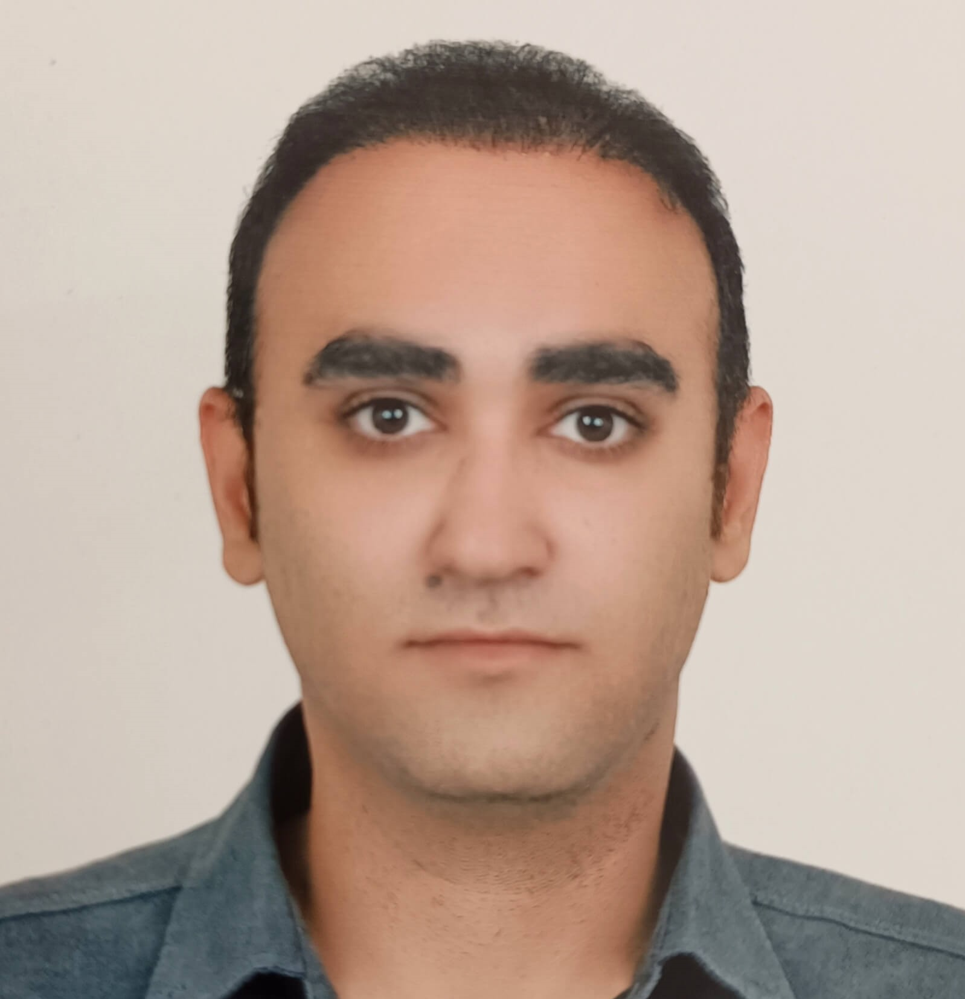

About Me
I am a cognitive neuroscience researcher with a background in psychology, statistics, and computational modeling. My work bridges experimental psychology, neurophysiology, and data science to understand the neural mechanisms underlying cognition and emotion.
🧠 Research Interests
⭐ Primary Interests
- Cognitive Neuroscience
- Computational Neuroscience
- Reinforcement Learning & Decision-Making
- Cognitive & Affective Neuroscience
💫 Secondary Interests
- Neuropsychology
- Computational Psychiatry
- Neuroeconomics
- Neural Mechanisms of Learning & Memory
🌍 Languages
Persian
Native
English
Professional Working
Italian
Beginner (A1)
🎓 B.Sc. in Psychology
GPA: 18.23/20 (≈ 3.65/4.0)Islamic Azad University - Science & Research Branch is the flagship campus of the IAU system and the premier research-focused branch in Iran.
- Established: 1984 as the research hub of IAU
- Student Body: Over 50,000 students (focus on graduate studies)
- Faculty: 1,000+ full-time, part-time, and visiting professors
- Academic Programs: 700+ disciplines at undergraduate and graduate levels
- Research Output: 243 ranked scientists, extensive publication record
- Global Ranking: Islamic Azad University system ranks among the world's largest university networks with over 400 branches globally
- International Recognition: QS Asian University Rankings 2026: #901-950
- National Ranking (Iran): Science & Research Branch consistently ranks #1 among all Islamic Azad University branches nationwide
- Facilities: 13 faculties, 17 research centers, advanced laboratories
As the largest and most prestigious branch of IAU (world's 5th largest university system with 1.5M students), the Science & Research Branch is recognized for its emphasis on postgraduate education and research excellence.
Academic Performance Summary
Overall Achievement
- Final GPA: 18.23/20 (≈ 3.65/4.0)
- Total Credits: 142 units
- Study Period: 2019-2024
- Graduation: August 17, 2024
Course Breakdown
- Total Courses: 67 completed
- Theoretical: ~2,100 hours
- Practical: ~640 hours
- Total: ~2,740 contact hours
📚 Course Categories
Click on each category to view detailed course information:
Cognitive & Neuroscience Courses
Core courses in cognitive psychology, neuropsychology, and neuroscience foundations
Research Methods & Statistics
Comprehensive training in research design, statistical analysis, and psychometrics
Clinical & Applied Psychology
Clinical psychology, psychopathology, counseling, and therapeutic interventions
Developmental & Social Psychology
Human development across lifespan, social psychology, and personality theories
Specialized Topics
Special needs psychology, sports psychology, addiction, and rehabilitation
General Education & Islamic Studies
Language, philosophy, Islamic studies, and general education requirements
Undergraduate Thesis
Virtual Relationships and Adolescent Mental Health
Grade: 19/20 (Excellent)
Type: Comprehensive literature review
Focus: Examined the psychological impacts of online social interactions on adolescent development, mental health outcomes, and identity formation in the digital age.
📊 Quantitative Foundations
Program Overview
Major: Statistics and Applications (Amar va Karbordha)
Credits Completed: ~70 units over 3 years
Status: Withdrew to pursue Psychology with intent to integrate quantitative methods with behavioral science
Core Mathematical & Statistical Coursework
- Calculus I - Limits, derivatives, integrals, sequences and series
- Calculus II - Multivariable calculus, partial derivatives, multiple integrals
- Mathematical Foundations - Logic, set theory, proof techniques
- Probability & Statistics I - Probability theory, distributions, random variables
- Probability & Statistics II - Multivariate distributions, sampling theory, limit theorems
- Descriptive Statistics - Data summarization, visualization, exploratory analysis
- Inferential Statistics - Hypothesis testing, confidence intervals, estimation theory
- Computer Science Fundamentals - Algorithms, data structures, computational thinking
- Statistical Methods - Regression, ANOVA, experimental design
Additional Coursework: Korean Language
During my time at University of Tehran, I developed a strong interest in languages and completed 12 credits (3 courses) in Korean language at the Faculty of World Studies:
- Korean Language I - Grade: 20/20
- Korean Language II - Grade: 20/20
- Korean Language III - Grade: 19.5/20
This demonstrates my strong aptitude for language acquisition and cross-cultural engagement.
Technical Skills Acquired
Career Transition & Academic Redirection
Strategic Decision to Pursue Psychology
While completing coursework in Statistics at University of Tehran, I underwent a period of intensive self-reflection and personal development. During this time, I engaged in therapeutic work that revealed a profound interest in the mechanisms of human cognition, emotion, and behavior—interests that extended well beyond applied statistics.
This introspective process clarified that my true intellectual passion lay at the intersection of quantitative methods and psychological science. Rather than continuing in pure statistics, I recognized an opportunity to integrate my mathematical training with the study of mind and brain—a combination that would uniquely position me for computational and cognitive neuroscience research.
The Strategic Transition: Given Iran's educational and military service regulations, I made the deliberate decision to withdraw and pursue a B.Sc. in Psychology. This path allowed me to:
- Align my education with my research interests in cognitive neuroscience and computational approaches to understanding behavior
- Leverage my quantitative foundation as a distinctive advantage in psychological research, where strong mathematical skills are increasingly valued
- Maintain uninterrupted academic progression toward graduate studies in cognitive neuroscience
- Build a unique interdisciplinary profile combining formal training in both mathematical sciences and psychology
This transition reflects a thoughtful career decision informed by genuine intellectual passion and strategic planning, rather than a change of direction due to academic difficulty. My strong performance in Psychology (GPA 18.23/20) and successful completion of demanding quantitative coursework demonstrate consistent academic capability across both disciplines.
Value to Cognitive Neuroscience Research
This quantitative foundation provides me with a unique advantage in computational neuroscience and cognitive science research:
- Strong mathematical background for understanding neural models and statistical frameworks
- Programming proficiency enabling implementation of computational models and data analysis pipelines
- Statistical rigor for designing and analyzing complex behavioral and neural experiments
- Bridge between disciplines - rare combination of formal statistical training and psychological science
🧠 DEAP EEG Analysis Project
✓ PUBLISHED PREPRINTProject Overview
Reanalyzed frontal EEG asymmetry in the publicly available DEAP dataset examining the relationship between neural activity and emotional valence during music video viewing.
Methodology
- Dataset: DEAP dataset with 32 participants, 40 music video trials per participant
- Analysis: Frontal alpha asymmetry using differential entropy
- Statistical Approach: Within-between variance decomposition to account for individual differences
- Innovation: Implemented artifact detection calibration for improved signal quality
Key Findings
Novel insights into the relationship between frontal EEG asymmetry and subjective emotional valence, with improved methodological controls for artifact contamination.
Tools & Technologies
Open Science
❤️ HRV Biofeedback RCT
📋 PRE-REGISTEREDStudy Design
Pre-registered randomized controlled trial examining the effects of heart rate variability (HRV) biofeedback training on adaptive decision-making under uncertainty.
Key Features & Instrumentation
Physiological Recording
- ECG: Polar H10 (1000 Hz, ICC > 0.99 vs. clinical Holter)
- Respiration: Vernier Go Direct Belt (50 Hz piezoelectric)
- Synchronization: Lab Streaming Layer (LSL) for trial-level integration
Behavioral Task
Probabilistic Reversal Learning: 360 trials, 6 blocks (3 stable + 3 reversal)
Participants learn which stimulus yields more rewards (80/20 or 65/35), then adapt when contingencies unexpectedly reverse
Statistical & Computational Framework
Software: R 4.3.1 (lme4, brms, Stan, mediation, BayesFactor, ggplot2)
Power: 0.80 for d=0.50 at α=0.05 → N=128 required (160 enrolled for 20% attrition)
Primary Model: Hierarchical Bayesian dual-alpha Q-learning with perseveration
- Separate learning rates for wins (α⁺) vs. losses (α⁻)
- Inverse temperature (β) for exploitation/exploration
- Perseveration parameter (κ) for habitual repetition
- Group-specific hyperparameters estimated via Stan MCMC
Quality Control & Open Science
📊 Data Quality
Real-time monitoring, <5% artifact threshold, weekly PI audits
⚕️ Safety
Standardized AE logging, stopping rules, interim review at N=40
🔓 Transparency
OSF pre-registration, de-identified data/code sharing, clinical trial registry
Timeline & Current Status
Protocol Finalized & Pre-Registered
Complete protocol (67 pages) uploaded to OSF with time-stamped lock
2026: Laboratory Setup
Finalize location upon MSc/PhD acceptance in Italy • Ethics Committee approval
2026-2027: Data Collection & Analysis
Recruit and test N=160 participants • Hierarchical Bayesian modeling • Manuscript preparation
- Pre-registration: Analysis plan registered before data collection
- Analyst-blinded design: Data analyst remains blind to group allocation
- Bayesian hierarchical modeling: Accounts for individual differences and uncertainty
- Computational modeling: Reinforcement learning models to understand decision processes
- Open data & code: All materials will be publicly available
Analysis Plan
Bayesian hierarchical models using Stan/brms with model comparison via LOO-CV. Computational RL models (Q-learning, actor-critic) fit to behavioral data.
Resources
💻 THINK-360+ Interactive Platform
Project Overview
THINK-360+ is a comprehensive Progressive Web Application (PWA) developed as an interactive companion tool for the book "Islands of Your Mind: 9 Thinking Styles for Everyday Life". This platform transforms theoretical cognitive science concepts from the book into practical, interactive exercises that readers can use to develop and practice different thinking styles in their daily lives.
Mission: Bridge the gap between cognitive psychology theory and practical application by providing an engaging, accessible digital tool that helps users understand and apply nine distinct thinking styles.
The Nine Thinking Styles
The platform is built around nine evidence-based thinking styles, each representing a different cognitive approach to problem-solving and decision-making:
🎯 1. Analytical Thinking
Systematic breakdown of complex problems into manageable components, logical reasoning, and data-driven decision making.
🌊 2. Holistic Thinking
Seeing the bigger picture, understanding interconnections, and considering systems as integrated wholes rather than isolated parts.
💡 3. Creative Thinking
Generating novel ideas, thinking outside conventional boundaries, and making unexpected connections between concepts.
🔄 4. Flexible Thinking
Adapting to changing circumstances, considering multiple perspectives, and switching between different approaches when needed.
⚖️ 5. Critical Thinking
Evaluating information objectively, questioning assumptions, identifying biases, and making reasoned judgments.
🎨 6. Divergent Thinking
Exploring multiple possible solutions, brainstorming diverse ideas, and embracing variety in thought processes.
🎯 7. Convergent Thinking
Narrowing down options to find the single best solution, focusing on efficiency and optimization.
🔮 8. Strategic Thinking
Long-term planning, anticipating future scenarios, and aligning actions with overarching goals.
❤️ 9. Empathetic Thinking
Understanding others' perspectives, emotional intelligence, and considering human factors in decision-making.
Core Features & Functionality
Interactive Exercises & Activities
- Guided Exercises: Step-by-step activities for each thinking style with real-world scenarios
- Self-Assessment Tools: Questionnaires to help users identify their dominant thinking patterns
- Practical Scenarios: Situational exercises where users apply different thinking styles to solve problems
- Reflection Prompts: Questions that encourage metacognitive awareness and deeper understanding
- Progress Tracking: Visual indicators showing which exercises have been completed
Content Organization System
- Hierarchical Navigation: Multi-level menu system allowing easy access to any section
- Chapter Integration: Direct correlation between app sections and book chapters
- Quick Access Menu: Jump directly to any thinking style or exercise
- Search Functionality: Find specific content across all sections
- Deep Linking: Share specific pages or exercises via direct URLs
Personalization Features
- Bookmark System: Save favorite exercises, concepts, or pages for quick reference
- Notes & Annotations: Add personal notes to any section (stored locally)
- Custom Learning Paths: Create personalized sequences of exercises
- Progress Dashboard: Visual overview of completed activities and learning journey
- Personal Statistics: Track which thinking styles you engage with most
Bilingual Support & Accessibility
- Complete English/Persian Interface: Seamless language switching without page reload
- RTL (Right-to-Left) Support: Proper text direction and layout for Persian language
- Culturally Adapted Content: Examples and scenarios relevant to both Western and Iranian contexts
- Responsive Typography: Optimized fonts for both Latin and Persian scripts
- Language Persistence: Remembers user's language preference across sessions
Technical Architecture
Progressive Web Application (PWA)
What is a PWA?
A Progressive Web Application combines the best features of websites and native mobile apps. Users can access THINK-360+ through any web browser, install it on their device like a native app, and use it offline without an internet connection.
Key PWA Features Implemented:
- Installability: Add to home screen on iOS, Android, Windows, macOS - works like a native app
- Offline Functionality: Full app functionality without internet after first visit
- Background Sync: Updates content when connection is restored
- Push Notifications: Infrastructure ready for future engagement features
- Fast Loading: Caching strategies ensure instant page loads
- Low Data Usage: Service Worker minimizes data transfer
Code Architecture & Structure
- Modular JavaScript: ES6+ modules for maintainable, organized code structure
- Component-Based Design: Reusable UI components reduce code duplication
- State Management: Centralized application state for consistent user experience
- Router System: Custom routing for multi-page navigation without page reloads
- Event-Driven Architecture: Loose coupling between components via event system
- Performance Optimization: Lazy loading, code splitting, and efficient rendering
Data Persistence & Storage
- Local Storage: User preferences, bookmarks, and progress saved locally on device
- IndexedDB Ready: Infrastructure for storing larger datasets if needed
- Data Synchronization: Export/import functionality for backing up user data
- Privacy-First: All data stored locally - no external servers or tracking
- Cache Management: Intelligent caching of assets and content
User Interface & Experience
- Responsive Design: Fluid layouts adapting from mobile (320px) to large desktop displays
- Touch-Optimized: Gesture support and touch-friendly interface elements
- Accessibility: Semantic HTML, ARIA labels, keyboard navigation support
- Dark/Light Themes: Automatic theme switching based on system preferences
- Smooth Animations: CSS transitions and JavaScript animations for polished UX
- Loading States: Visual feedback during data fetching and processing
Technical Specifications
📊 Codebase Statistics
Total Lines: 6,000+ production code
JavaScript: ~3,500 lines
HTML: ~1,500 lines
CSS: ~1,000 lines
Files: 50+ organized files
🛠️ Technologies Used
Core: HTML5, CSS3, Vanilla JavaScript ES6+
PWA: Service Workers, Web App Manifest
Storage: Local Storage API, Cache API
Design: Flexbox, CSS Grid, CSS Variables
📱 Platform Support
Mobile: iOS Safari, Android Chrome
Desktop: Chrome, Firefox, Safari, Edge
Offline: Full functionality offline
Install: All major platforms
Development Challenges & Solutions
Technical Challenges Solved
Challenge 1: Bilingual Content Management
Problem: Managing duplicate content in two languages while maintaining synchronization
Solution: Implemented a translation system with JSON-based language files, allowing instant language switching without code duplication. Built custom RTL/LTR layout engine that automatically adjusts UI direction based on language.
Challenge 2: Offline-First Architecture
Problem: Ensuring full functionality without internet connection
Solution: Implemented sophisticated Service Worker with cache-first strategy for static assets and network-first with cache fallback for dynamic content. Created offline detection system that seamlessly handles connectivity changes.
Challenge 3: Performance on Low-End Devices
Problem: Maintaining smooth performance on older smartphones
Solution: Implemented lazy loading for images and content sections, optimized JavaScript execution with debouncing/throttling, used CSS animations instead of JavaScript where possible, and minimized DOM manipulations through efficient rendering strategies.
Challenge 4: Data Persistence Across Sessions
Problem: Reliably storing user progress and preferences
Solution: Built robust Local Storage wrapper with error handling, data validation, and automatic migration system. Implemented export/import functionality allowing users to backup and restore their data.
User Experience Design
Design Philosophy
The interface design follows principles of cognitive psychology to minimize cognitive load and maximize learning effectiveness:
- Progressive Disclosure: Information revealed gradually to avoid overwhelming users
- Consistent Patterns: Familiar UI patterns reduce learning curve
- Visual Hierarchy: Clear information architecture guides user attention
- Feedback Loops: Immediate visual feedback for all user actions
- Cognitive Mapping: Navigation structure matches mental models of learning
Impact & Usage
📚 Educational Value
Transforms abstract cognitive psychology concepts into concrete, actionable exercises that users can practice in daily life
🌍 Accessibility
Free, open-source platform accessible to anyone with a web browser, removing barriers to cognitive skill development
💡 Practical Application
Bridges theory-practice gap by providing tools readers can immediately use to apply book concepts
Skills Demonstrated
Future Development Plans
Planned Enhancements
- Spaced Repetition System: Implement evidence-based review scheduling for exercises
- Progress Analytics: Detailed insights into thinking style development over time
- Community Features: Optional sharing of insights and exercise results
- Audio Content: Guided meditations and audio exercises for each thinking style
- Gamification: Achievement system to encourage regular practice
- API Integration: Connect with journal apps and productivity tools
Open Source Contribution
THINK-360+ is open source, allowing developers to learn from the codebase and contribute improvements. The repository includes:
- Comprehensive documentation of architecture and design decisions
- Code comments explaining complex implementations
- Contributing guidelines for potential collaborators
- MIT License allowing free use and modification
Links & Resources
Project Significance
THINK-360+ represents the intersection of my interests in cognitive science, technology, and science communication. By creating this comprehensive platform, I've demonstrated not only technical proficiency in web development but also the ability to translate complex psychological concepts into accessible, practical tools. This project showcases skills essential for modern research: building digital tools, managing complex codebases, user-centered design, and effective science communication. The bilingual implementation and attention to accessibility reflect my commitment to making scientific knowledge broadly available across cultural and linguistic boundaries.
📄 Frontal EEG Differential Entropy and Subjective Valence in the DEAP Dataset
✓ PUBLISHED PREPRINTFull Citation
Lotfifar, A. M., & Mohammadi, M. D. (2025). Frontal EEG Differential Entropy and Subjective Valence in the DEAP Dataset: Artifact-Calibrated Analysis with Within–Between Decomposition. Preprint.
Authors: Amirmohammad Lotfifar & Melika Dabbagh Mohammadi
Affiliation: Independent Researchers in Cognitive Psychology and Neuroscience, Tehran, Iran
Abstract
Objective: Differential entropy (Hₑ) is widely used as an EEG feature in affective computing, but evidence for Hₑ as a stand-alone correlate of continuous subjective valence remains mixed. Here we quantify the association between frontal Hₑ and self-reported valence using an artifact-calibrated pipeline.
Methods: Using the DEAP dataset (32 participants, 40 trials each), we derived frontal EEG differential entropy from Fp1/Fp2 after baseline correction. Hₑ was computed on 4-s windows with 50% overlap (29 windows per 60-s trial) and aggregated to trial-level means. Artifact windows were flagged using a calibrated percentile-based threshold (p99.5). We report (i) naive trial-level correlations, (ii) OLS with participant-clustered robust standard errors, (iii) random-intercept mixed models, and (iv) within–between decomposition to separate within-participant from between-participant associations.
Results: In the primary analysis (N=1,148 trials), naive trial-level association between Hₑ and valence was small but statistically detectable (r=−0.086, p=0.004; R²=0.007), while Hₑ showed no association with arousal (r=0.005, p=0.87). However, when accounting for repeated measures, evidence weakened substantially: cluster-robust OLS yielded p=0.125, and random-intercept models produced β=0.0055, p=0.068. Within–between decomposition revealed the negative association was primarily between participants (r=−0.285, p=0.114) with negligible within-participant effects (β≈0.006, p=0.186). Hₑ showed excellent split-half reliability (ICC=0.990, 95% CI [0.988, 0.991]).
Conclusion: Frontal differential entropy exhibits high measurement reliability but only a very small trial-level association with subjective valence in DEAP. This association is not robust to models emphasizing within-participant variation, motivating cautious interpretation of single-feature Hₑ–valence links and multifeature approaches for practical emotion prediction.
Key Contributions
Methodological Innovations
- Artifact-Calibrated Pipeline: Implemented empirically-calibrated artifact detection using p99.5 percentile threshold rather than arbitrary cutoffs
- Within-Between Decomposition: Distinguished within-participant (trial-to-trial) effects from between-participant (individual differences) associations
- Multiple Statistical Approaches: Reported complementary analyses including naive correlations, cluster-robust standard errors, mixed-effects models, and variance decomposition
- Comprehensive Reliability Assessment: Evaluated both split-half reliability (ICC=0.990) and temporal stability (ICC=0.965)
- Three Artifact-Handling Variants: PRIMARY (all windows), WIN_REMOVED (flagged windows removed), EXCLUDED (trials with any flagged window removed)
Key Findings
- Small Effect Size: Naive trial-level correlation r=−0.086 (p=0.004), explaining only 0.7% variance
- Between-Participant Effect: Association primarily driven by stable individual differences (r=−0.285, p=0.114) rather than within-person variation
- Excellent Reliability: Differential entropy showed very high measurement consistency across window splits and time periods
- No Arousal Association: Hₑ showed no meaningful relationship with arousal ratings (r=0.005, p=0.87)
- Robust Across Variants: Results consistent across all three artifact-handling approaches
Dataset & Methods
📊 DEAP Dataset
Participants: 32 healthy adults
Trials: 40 music videos per participant
Duration: 60 seconds per trial
Ratings: Valence & arousal (1-9 scale)
🧠 EEG Analysis
Channels: Fp1, Fp2 (frontal)
Windows: 4s with 50% overlap (29 per trial)
Feature: Differential entropy (Gaussian)
Sample: 1,148 trials (PRIMARY)
📈 Statistical Methods
Naive: Pearson correlation
Robust: Cluster-corrected SE
Mixed: Random-intercept models
Decomposition: Within-between effects
Technical Skills Demonstrated
Implications for Research
For Affective Computing:
- Cautions against relying on differential entropy alone as a valence marker
- Emphasizes need for multifeature approaches in emotion recognition systems
- Highlights importance of cross-validated predictive performance over univariate correlations
For Methodology:
- Demonstrates importance of distinguishing within-person from between-person effects
- Provides replicable artifact-calibration approach for EEG preprocessing
- Shows how naive correlations can be misleading without repeated-measures corrections
Open Science Practices
- Public Dataset: Analysis based entirely on openly available DEAP dataset
- Full Code Availability: All preprocessing, analysis, and visualization scripts provided
- Reproducible Pipeline: Complete documentation enabling exact replication of results
- Transparent Reporting: Multiple statistical approaches reported to avoid selective reporting
- Preprint Publication: Results made immediately available to research community
Keywords
Links & Resources
Significance
This study demonstrates rigorous quantitative methodology in affective neuroscience research. By systematically distinguishing measurement reliability from predictive validity, and by separating within-person temporal dynamics from between-person trait differences, it provides a methodological template for evaluating EEG-emotion associations. The artifact-calibrated preprocessing pipeline and comprehensive statistical modeling approach (including mixed-effects models and variance decomposition) showcase advanced skills in both signal processing and statistical inference. The finding that differential entropy is highly reliable but shows only weak trial-level associations with valence has important implications for the design of emotion recognition systems, emphasizing the need for multifeature approaches rather than reliance on single EEG metrics.
📋 HRV Biofeedback and Adaptive Decision-Making
📋 PRE-REGISTERED PROTOCOLFull Title
Lotfifar, A. M., & Mohammadi, M. D. (2025). Causal Effect of Heart Rate Variability Biofeedback Training on Adaptive Decision-Making: A Randomized Controlled Trial with Hierarchical Bayesian Modeling
Principal Investigator: Amirmohammad Lotfifar
Co-Principal Investigator: Melika Dabbagh Mohammadi (Independent Researcher)
Disclosure: The PI and Co-PI are married and conducting separate independent trials. This relationship has been fully disclosed to the Ethics Committee.
Study Overview
Design: Parallel-group, randomized (1:1), analyst-blinded, active-controlled clinical trial
Sample Size: N = 160 healthy adults (80 per arm), powered for Cohen's d = 0.50, accounting for ≤20% attrition
Intervention: Single-session (20 minutes) HRV biofeedback at resonance frequency vs. active control (paced breathing at non-resonant 15 breaths/min)
Primary Outcome: Performance on probabilistic reversal learning task (Relative Expected Value)
Planned Location: University laboratory in Italy (to be finalized upon acceptance into Master's/PhD program in 2026)
Status: Pre-registered protocol; data collection planned 2026-2027
Theoretical Framework: Neurovisceral Integration Model
This investigation is grounded in the Neurovisceral Integration (NVI) Model (Thayer & Lane, 2000), which proposes that heart rate variability serves as a quantifiable index of the functional integrity of the Central Autonomic Network (CAN)—a distributed neural network involving prefrontal cortex, anterior cingulate, insula, amygdala, and brainstem nuclei.
Core Hypothesis: Higher resting vagal tone (indexed by HRV metrics like RMSSD) reflects robust prefrontal inhibitory control over subcortical circuits, facilitating adaptive decision-making and cognitive flexibility.
Research Hypotheses
Confirmatory Hypotheses (Pre-Registered)
H1: Causal Effect on Behavioral Performance
Hypothesis: HRV Biofeedback group will demonstrate significantly higher task performance (Relative Expected Value) compared to Active Control
Predicted Effect: Cohen's d ≥ 0.50
Controls: Baseline HRV, respiratory parameters, age, sex
H2: Physiological Mediation
Hypothesis: Group effect on performance will be mediated by magnitude of HRV increase (ΔlogRMSSD)
Analysis: Causal mediation with 5,000 bootstrap iterations
H3: Computational Mechanisms
Hierarchical Bayesian dual-alpha Q-learning predicts Biofeedback group will show:
- H3a: Reduced decision noise (higher β)
- H3b: Reduced learning rate asymmetry (lower |α⁺−α⁻|)
- H3c: Reduced perseveration (lower κ)
Exploratory Hypotheses
- H4: Individual differences in ΔlogRMSSD correlate with task performance
- H5: Trial-level cardiac deceleration after losses predicts adaptive switching (moderated by Group)
Methodological Innovations
🎯 Rigorous Active Control
Paced breathing outside resonance band controls for attention/rhythmic breathing without HRV amplification
⚡ Single-Session Design
Tests immediate causal effects, avoids practice/expectancy confounds
🧮 Computational Modeling
Hierarchical Bayesian RL dissects latent cognitive parameters
🫁 Respiratory Control
Continuous monitoring; statistical control for breathing confounds
🔬 Analyst Blinding
Analysts blind until final database lock
📊 Full Pre-Registration
Complete protocol registered before data collection
Research Questions
- Does HRV biofeedback training improve decision-making in reinforcement learning tasks?
- What are the computational mechanisms underlying any observed effects?
- How do individual differences in baseline HRV moderate training outcomes?
Methodological Features
- Pre-registration: Complete analysis plan registered before data collection
- Analyst-blinded design: Data analyst remains blind to group allocation throughout analysis
- Bayesian hierarchical modeling: Accounts for individual differences and uncertainty quantification
- Computational modeling: Reinforcement learning models (Q-learning, actor-critic) to understand decision processes
- Open science: All materials, data, and code will be publicly available upon completion
Links & Resources
✍️ Manuscripts in Preparation
IN PREPARATION1. Neural Mechanisms of Cognitive–Emotional Integration
Authors: Lotfifar, A. M., & Mohammadi, M.
Title: Neural Mechanisms of Cognitive–Emotional Integration: A Conceptual Framework for PFC–Limbic Flexibility and Hybrid EEG–fMRI Research
Status: Draft in preparation
Focus: Theoretical framework examining prefrontal-limbic interactions in cognitive-emotional processing, with implications for hybrid neuroimaging approaches
2. The E.M.E.R.G.E+ Framework
Author: Lotfifar, A. M.
Title: The E.M.E.R.G.E+ Framework: A Theoretical Model for Meaning Emergence Through Dual Entropy Dynamics
Status: Draft in preparation
Focus: Theoretical model integrating information theory and cognitive neuroscience to understand meaning-making processes
3. The Digital Mirror Exposure Paradox
Authors: Lotfifar, A. M., & Mohammadi, M.
Title: The Digital Mirror Exposure Paradox: A Neurocognitive Framework for Understanding Beauty Filter Effects on Adolescent Self-Perception
Status: Under revision
Focus: Neurocognitive framework examining how social media beauty filters impact adolescent self-perception and identity development
Relevance: Directly related to undergraduate thesis on virtual relationships and adolescent mental health
Note on Availability
Draft manuscripts are available upon request for academic review purposes. Please contact via email for access.
📖 Islands of Your Mind: Thinking Styles for Everyday Life
جزایر ذهن: سبکهای فکری برای زندگی روزمره
✓ READY FOR PRINTBook Information
Authors: Amirmohammad Lotfifar & Melika Dabbagh Mohammadi
Original Title: جزایر ذهن: سبکهای فکری برای زندگی روزمره
Language: Persian (فارسی)
Status: Manuscript completed and submitted for publication
Publisher: To be announced
Expected Publication: 2025
About the Book
This book is a map of your mind—about "how you think," not "what to think."
Many of us notice repetitive patterns in decisions, relationships, work, or studies. We say "this time will be different," but the same thing happens again. The problem isn't "not thinking enough"—it's the model of thinking itself.
This book doesn't tell you what goals to choose or which path is right. Its purpose is to help you see how you currently think and how you can adjust and strengthen your thinking style in a calm, realistic, and actionable way.
The Nine Thinking Styles
Using the metaphor of islands, the book introduces nine main thinking styles:
🔍 Analytical Thinking
Island of Analysts - Breaking problems into pieces and searching for cause and effect
💡 Creative Thinking
Island of Creators - Breaking out of familiar frameworks and finding unconventional solutions
❓ Critical Thinking
Island of Questioners - Evaluating sources and logic before accepting any claim or news
❤️ Empathetic Thinking
Island of Empaths - Understanding the feelings and experiences of others
🔄 Systems Thinking
Island of Systems Thinkers - Seeing problems as products of patterns and hidden structures
🎯 Strategic Thinking
Island of Strategists - Bringing future years into the equation alongside today
🔬 Experimental/Scientific Thinking
Island of Experimenters - Testing small versions of decisions in practice
🧩 Integrative Thinking
Island of Integrators - Combining multiple thinking styles when one isn't enough
🪞 Reflective Thinking
Island of Reflectors - Stepping back to ask: "How did I think that brought me here?"
Book Structure
Chapter Zero: 24 Hours with Your Mind
Before anything else, observe how you think. This chapter contains five practical exercises to help you observe your current mind without judgment.
Chapter One: The Mind Workshop - Common Ground of the Islands
General framework: automatic vs. conscious mind, the map of 9 islands, and basic neuroscience knowledge
Chapters 2-10: Journey to the Islands
Each chapter focuses on one thinking style with real-life scenarios, neuroscience explanations, and practical exercises
Key Features
- Science Communication: Translates complex cognitive psychology and neuroscience concepts into simple, practical language
- Practical Application: Each thinking style includes actionable exercises and real-life examples from everyday situations
- Evidence-Based: Grounded in cognitive psychology and contemporary neuroscience research
- Interactive Companion Platform: Accompanied by the THINK-360+ Progressive Web Application
- Exercise-Focused: Chapter Zero is entirely exercise-based; each chapter ends with specific practice activities
Target Audience
This book is useful for you if:
- Your mind is full of complex, busy thoughts, but your decisions aren't clear
- You think a lot, but the outcomes of your decisions are weak
- You notice repetitive patterns in relationships, studies, work, or finances
- You feel that in different situations, you reach similar dead ends
- You've gradually realized that just changing people and cities might not be enough—you need to examine your thinking style too
Interactive Companion Platform
A comprehensive Progressive Web Application (PWA) developed as an interactive companion to the book, transforming concepts into interactive cognitive exercises:
💻 Technology
6,000+ lines of production code (HTML5, CSS3, JavaScript ES6+, Service Workers)
✨ Features
Interactive exercises, progress tracking, bookmarks, offline functionality
🌐 Bilingual
Complete Persian/English interface with RTL support
🏗️ Architecture
Multi-page PWA with hierarchical navigation and deep linking
Links & Resources
Significance
This book represents my commitment to science communication and public engagement with cognitive neuroscience. By making complex scientific concepts accessible to general audiences in Persian, it bridges the gap between academic research and practical application in daily life. The accompanying interactive platform demonstrates the integration of web development skills with psychological science to create accessible, evidence-based tools for cognitive skill development.
🏫 Educational Support & Psychological Services
Overview
Since 2016, I have been providing educational support and psychological services through two interconnected paths: volunteer consulting at my former middle school and private tutoring specializing in mathematics instruction for children with learning difficulties and cognitive impairments.
What began as straightforward mathematics tutoring evolved into a profound interest in neuroscience and cognitive rehabilitation after encountering a student whose learning challenges opened my eyes to the fascinating intersection of brain function, learning, and therapeutic intervention.
🏫 School-Based Volunteer Consulting
2024-Present (~1 Year) • Volunteer Position (Unpaid)Setting & Background
I maintain an ongoing volunteer relationship with the middle school where I studied during my own adolescence. This unique connection allows me to give back to the institution that shaped my early education while gaining valuable practical experience in educational psychology and child development.
Role: Provide temporary, as-needed psychological and educational support on a volunteer basis
Student Population: Middle school students (grades 7-9, ages 12-15) with diverse backgrounds and needs
Services Provided
- Working with Children: Direct engagement with students experiencing behavioral, emotional, or academic challenges
- Educational Support: Assist with teaching and learning strategies, particularly for students struggling with mathematics
- Talent Discovery: Help identify and nurture students' strengths, abilities, and potential talents
- Consultation: Informal consultation with teachers and administrators on student needs and effective interventions
- Referral Support: Identify students who would benefit from more intensive private intervention and facilitate appropriate referrals
Bridge to Private Practice
For students requiring more intensive support than can be provided in the school setting, I offer private tutoring and play therapy services. This arrangement allows for:
- Continuity of care: Seamless transition from school-based identification to private intervention
- Intensive support: One-on-one mathematics tutoring and play therapy for students with significant learning challenges
- Specialized intervention: Tailored approaches for students with cognitive impairments, TBI history, or developmental delays
- Long-term follow-up: Sustained support that extends beyond what schools can typically provide
📚 Private Tutoring & Therapeutic Educational Services
Since 2016 • OngoingMathematics Tutoring Specialization
Since 2016, I have provided private mathematics tutoring with a growing specialization in working with learners who face significant cognitive and learning challenges. Over the years, my approach has evolved from conventional tutoring to therapeutic educational intervention informed by neuropsychology and cognitive science.
Student Population:
- Children and adolescents with specific learning disorders (dyscalculia, ADHD)
- Students with developmental delays or intellectual disabilities
- Individuals with traumatic brain injury (TBI) history
- Adults with cognitive impairments affecting mathematical reasoning
Play Therapy Integration
For students referred from the school (and others) who require more than academic support, I incorporate play therapy techniques into educational interventions. This integrated approach addresses both cognitive and emotional aspects of learning difficulties.
Approach:
- Play-Based Learning: Using games and play activities to teach mathematical concepts
- Emotional Support: Addressing anxiety, frustration, and self-esteem issues that interfere with learning
- Cognitive Engagement: Building foundational cognitive skills (attention, working memory, executive function)
- Relationship Building: Creating a safe, supportive environment where students feel comfortable making mistakes and taking risks
🧠 The Case That Changed My Path
A Turning Point in My Career Journey
How working with a student with TBI led me to neuroscience
The Student
In my early years of tutoring (before I began formal psychology studies), I worked with a 30-year-old male student for approximately 1.5 years who presented profound mathematical learning difficulties that I initially could not understand or effectively address.
Presenting Challenges:
- Complete absence of abstract thinking: Unable to represent or manipulate numbers mentally
- Severe working memory deficits: Could not hold even simple calculations like "3 × 7" in mind
- Concrete, one-by-one counting: Had to physically count each unit individually; could not use grouping strategies
- No mental number line: Lacked internal representation of numerical magnitude and relationships
- Inability to generalize: Each problem had to be solved from scratch; could not apply learned strategies to new situations
Medical History:
- Childhood seizure disorder: Experienced recurrent seizures during developmental years
- Traumatic brain injury (TBI): Sustained brain injury that likely contributed to cognitive impairments
- Long-term cognitive sequelae: Persistent difficulties with abstract reasoning, working memory, and numerical cognition
The Challenge & My Initial Approach
At that time, I had no formal training in psychology or neuroscience. I approached the situation as a conventional mathematics tutor would: explaining concepts clearly, providing practice problems, breaking down steps, and repeating information.
What I Tried (Unsuccessfully):
- Standard mathematical explanations and demonstrations
- More practice and repetition
- Breaking problems into smaller steps
- Visual aids and diagrams (which he couldn't mentally manipulate)
- Memorization strategies (which he couldn't retain)
The Problem: No matter how much I worked with him, there was minimal progress. I couldn't understand why someone could be trying so hard yet make so little advancement. The traditional teaching methods that worked with other students were completely ineffective.
The Shift Toward Play Therapy
Frustrated by the lack of progress and wanting to genuinely help this student, I began to move away from conventional tutoring approaches. Gradually, almost intuitively, I started incorporating more game-based and play-oriented activities.
What Changed:
- Play-based learning: Using physical manipulatives, games, and hands-on activities rather than abstract explanations
- Concrete representation: Building mathematical concepts through tangible objects and real-world situations
- Reduced pressure: Creating a non-evaluative, supportive environment where mistakes were part of the learning process
- Relationship focus: Prioritizing emotional connection and trust over academic achievement
- Cognitive scaffolding: Breaking down tasks to their most fundamental cognitive components
While progress remained slow, this shift allowed me to connect with the student more effectively and see small but meaningful gains in his confidence and engagement—even if the mathematical learning remained severely limited by his underlying cognitive impairments.
The Profound Impact on My Career Path
This experience fundamentally changed the trajectory of my academic and professional interests. Working with this student raised questions I couldn't answer:
- Why couldn't he learn? What was happening (or not happening) in his brain that made abstract mathematical thinking impossible?
- What role did his TBI play? Which brain regions were affected, and how did that impact his cognitive abilities?
- Could rehabilitation help? Were there neuroscience-based interventions that might support cognitive recovery or compensation?
- How does the brain represent numbers? What neural systems underlie mathematical cognition, and what happens when they're damaged?
This led me to:
- Pursue psychology formally: Enrolled in B.Sc. Psychology program to understand cognitive and neurological foundations of learning
- Develop interest in neuroscience: Became fascinated with brain injury, neural rehabilitation, and cognitive neuroscience
- Study neuropsychology: Sought specialized knowledge in brain-behavior relationships and cognitive assessment
- Explore play therapy: Formally learned therapeutic play techniques to help children with learning and emotional difficulties
- Focus research interests: Directed my academic path toward understanding neural mechanisms of learning, memory, and cognitive rehabilitation
The Legacy: This challenging and humbling experience taught me that effective intervention requires understanding not just behavior, but the underlying neural mechanisms. It sparked my passion for cognitive neuroscience and showed me the profound importance of neuroscience research for developing better therapeutic and educational interventions. This student—whose name I won't share but whose struggle I'll never forget—is the reason I'm now applying to graduate programs in cognitive neuroscience.
Teaching Approach & Methods
Therapeutic Educational Framework
My approach has evolved significantly since 2016, now integrating neuropsychological principles with educational and therapeutic techniques:
🧩 Cognitive Assessment
- Informal assessment of cognitive strengths and weaknesses
- Identifying specific areas of difficulty (working memory, attention, processing speed)
- Understanding learning profile to tailor instruction
🎯 Individualized Instruction
- Errorless learning techniques to build confidence
- Concrete-to-abstract progression
- Multisensory teaching methods
- Cognitive scaffolding and support
🎮 Play-Based Learning
- Mathematical games and puzzles
- Physical manipulatives and hands-on activities
- Playful exploration of concepts
- Reduced anxiety through non-evaluative activities
❤️ Emotional Support
- Building self-efficacy and confidence
- Addressing math anxiety and learned helplessness
- Creating safe space for making mistakes
- Celebrating small victories and progress
🧠 Neuroscience-Informed Practice
- Understanding brain-based learning principles
- Recognizing signs of cognitive fatigue
- Adapting to attentional limitations
- Supporting executive function development
👨👩👧 Family Collaboration
- Parent consultation and guidance
- Home practice recommendations
- Progress updates and feedback
- Referrals to specialists when needed
Student Outcomes & Impact
While outcomes vary significantly based on each student's unique profile and challenges, consistent themes emerge:
- Improved confidence: Students develop more positive attitudes toward mathematics and learning
- Reduced anxiety: Math anxiety decreases through supportive, playful approaches
- Skill development: Gradual improvement in foundational mathematical skills within the limits of cognitive capacity
- Better self-understanding: Students gain awareness of their learning strengths and challenges
- Family support: Parents gain strategies for supporting their child's learning at home
- Appropriate referrals: When needed, families receive guidance toward specialized services (neuropsychological evaluation, occupational therapy, etc.)
Important Note: I am realistic about limitations. For students with significant cognitive impairments (like the TBI case described above), progress in mathematical learning may be minimal despite best efforts. In these cases, the goal shifts toward building confidence, developing compensatory strategies, and ensuring students feel supported and valued—not "fixed" or "cured."
Skills Developed Through This Work
Connection to Graduate Studies
This hands-on experience working with children and adults with cognitive impairments has profoundly shaped my research interests and career goals. It has shown me firsthand the critical importance of understanding neural mechanisms underlying learning and cognition. Every student I work with reinforces my commitment to pursuing neuroscience research that can ultimately inform better educational and therapeutic interventions. My experience with the TBI case, in particular, ignited a passion for understanding brain injury, neural rehabilitation, and the relationship between brain structure and cognitive function—themes that continue to drive my academic pursuits and future research aspirations. This practical foundation in working directly with individuals facing cognitive challenges provides invaluable context for my interest in cognitive neuroscience and neuropsychological research.
📊 Statistical Consultant & Data Analyst
Position Overview
Serve as the primary statistical consultant and data analyst for PVD Kavian Co., a small-scale financial and business consulting firm. This multifaceted role encompasses comprehensive responsibility for data analysis, financial analytics, accounting processes, and management reporting.
Employment Timeline:
- 2019-2021: Full-time position providing comprehensive analytical and financial services
- 2021-Present: Part-time consultant maintaining ongoing analytical and strategic advisory role
This position has provided sustained financial support throughout my undergraduate and graduate application period while developing practical analytical skills directly applicable to research methodology and data science.
Core Responsibilities
Financial Analysis & Accounting
- Financial Reporting: Prepare comprehensive financial statements, cash flow analyses, and budget reports
- Accounting Management: Oversee accounting operations including ledger maintenance, reconciliation, and financial documentation
- Financial Forecasting: Develop quantitative models for revenue projection, expense forecasting, and financial planning
- Cost Analysis: Conduct detailed cost-benefit analyses for business decisions and investment opportunities
- Budget Management: Design and monitor departmental budgets, variance analysis, and resource allocation
Data Analytics & Business Intelligence
- Business Intelligence Dashboards: Design and implement interactive Power BI dashboards for real-time business monitoring and decision support
- Data Pipeline Development: Create automated data extraction, transformation, and loading (ETL) processes to streamline reporting
- Exploratory Data Analysis: Conduct comprehensive analyses of business datasets to identify trends, patterns, and actionable insights
- KPI Development: Define and track key performance indicators aligned with organizational goals
- Data Visualization: Transform complex datasets into clear, accessible visualizations for stakeholder communication
- Predictive Analytics: Apply statistical modeling techniques to forecast business outcomes and support strategic planning
Strategic Management & Consulting
- Statistical Consulting: Advise management on appropriate analytical methods for business questions and data-driven decision-making
- Management Reporting: Prepare executive-level reports synthesizing financial and operational data for strategic decisions
- Risk Assessment: Identify financial and operational risks through quantitative analysis and develop mitigation strategies
- Process Optimization: Analyze business workflows and recommend data-driven improvements for efficiency and cost reduction
- Performance Evaluation: Design metrics and evaluation frameworks for assessing organizational and departmental performance
Technical Skills & Tools
Business Intelligence & Visualization
Power BI (Working Knowledge):
- Dashboard Development: Created basic interactive dashboards for financial tracking and reporting
- DAX Functions: Working knowledge of DAX formulas for calculations and measures
- Data Modeling: Basic understanding of data models and relationships
- Power Query: Data transformation and cleaning using Power Query
- Report Creation: Designed reports with standard visualizations for business needs
Additional Tools:
Statistical & Analytical Methods
Programming & Data Science
- Python: pandas, NumPy for data manipulation and analysis
- R: Statistical computing and specialized financial analyses
- SQL: Database queries, joins, and data extraction
- Excel VBA: Automation of repetitive tasks and custom functions
Key Projects & Achievements
Financial Reporting & Dashboard Development
Power BI & Excel • 2020-Present
Challenge: Management needed better visibility into financial performance and operational metrics beyond static monthly Excel reports.
Solution: Developed basic Power BI dashboards and Excel-based reports to provide clearer financial tracking and performance monitoring.
Impact:
- Created simple dashboards for tracking cash flow, revenue, and expenses
- Improved report clarity through better visualizations and data organization
- Reduced time spent on manual data compilation
- Provided more accessible reporting format for management
Data Quality & Process Optimization Initiative
2019-2020
Challenge: Inconsistent data entry practices and lack of standardization led to errors in financial reporting and time-consuming data cleaning.
Solution: Implemented comprehensive data quality protocols including validation rules, standardized templates, and automated error detection systems.
Impact:
- 85% reduction in data entry errors
- Standardized processes ensuring consistency across all financial documentation
- Audit-ready records with complete documentation and traceability
- Training program developed for staff on data quality best practices
Cost Optimization Analysis
2022
Challenge: Rising operational costs without clear visibility into cost drivers or opportunities for efficiency improvements.
Solution: Conducted comprehensive cost analysis identifying expense categories, benchmarking against industry standards, and recommending optimization strategies.
Impact:
- Identified savings of 18% in operational expenses through process improvements
- Vendor negotiations informed by data analysis resulting in better contract terms
- Resource reallocation recommendations optimizing staffing and workflow
Professional Development & Learning
This position has required continuous self-directed learning to stay current with evolving tools and methodologies:
- Power BI Basics: Learned fundamental dashboard creation and data visualization
- Financial Acumen: Developed understanding of accounting principles, financial statements, and business finance
- Communication Skills: Learned to present analytical findings clearly to management
- Business Context: Gained practical understanding of how data supports business decisions
Transferable Skills for Research
Direct Applications to Neuroscience Research
The analytical and technical skills developed in this role are directly transferable to computational and cognitive neuroscience research:
📊 Data Management
- Experience with large, messy real-world datasets
- Data cleaning, validation, and quality assurance
- ETL pipeline development
- Database design and optimization
📈 Analytical Rigor
- Systematic approach to data analysis
- Hypothesis-driven investigation
- Statistical modeling and inference
- Reproducible analysis workflows
💻 Technical Proficiency
- Programming for data analysis (Python, R)
- Advanced visualization techniques
- Automation of repetitive tasks
- Version control and documentation
🎯 Problem-Solving
- Identifying appropriate methods for ambiguous questions
- Iterative refinement of analysis approaches
- Troubleshooting technical issues independently
- Creative solutions to data challenges
📝 Communication
- Translating technical findings for diverse audiences
- Data storytelling and visualization
- Report writing and documentation
- Stakeholder management
⏱️ Professional Skills
- Time management with competing priorities
- Meeting deadlines under pressure
- Self-directed learning and adaptation
- Attention to detail and accuracy
Financial Independence & Academic Support
Sustained Financial Support for Academic Pursuits:
This consulting role has provided crucial financial independence throughout my academic journey:
- Full-Time Period (2019-2021): Enabled me to complete undergraduate studies without financial constraints while gaining practical analytical experience
- Part-Time Period (2021-Present): Continues to support graduate school applications, professional development courses, research tools, and academic conferences
- Research Independence: Purchased necessary software licenses (SPSS, specialized tools), books, and equipment without relying on external funding
- Professional Development: Funded certifications, courses, and training programs that enhanced my research capabilities
- Academic Flexibility: Part-time arrangement allowed me to focus on research projects and manuscript preparation while maintaining financial stability
This position demonstrates not only my practical analytical capabilities but also my ability to balance professional responsibilities with academic commitments—a skillset essential for successful graduate research where projects often extend beyond traditional work hours.
Company Context: PVD Kavian Co.
About the Organization: PVD Kavian Co. is a small-scale business consulting and financial services firm based in Tehran, specializing in accounting, financial analysis, and business advisory services for small to medium-sized enterprises.
My Role's Scope: As the sole data analyst and statistician in a small organization, I have had the opportunity to:
- End-to-end project ownership: From problem definition to solution implementation and stakeholder presentation
- Diverse responsibilities: Exposure to finance, accounting, operations, and strategic planning
- Direct impact: Visible, measurable effects of my analytical work on business decisions and outcomes
- Interdisciplinary collaboration: Working with management, accountants, and clients from various industries
- Resource constraints: Learning to deliver high-quality results with limited tools and budget—fostering creativity and efficiency
Skills Summary
Relevance to Graduate Studies
This role has been instrumental in developing the practical data science and analytical skills essential for computational neuroscience research. The experience of working with real-world messy data, building reproducible analysis pipelines, and communicating findings to non-technical audiences directly parallels the challenges faced in research settings. Moreover, the financial independence this position has provided has enabled me to pursue research interests without constraint, invest in professional development, and maintain focus on academic excellence. The combination of rigorous quantitative training and hands-on experience positions me well for graduate programs requiring strong computational and statistical capabilities.
🐍 Data Analysis with Python
✓ COMPLETED • GRADE: A+ (92%)Course Overview
The digital age is developing and advancing, bringing with it an intelligent world that has become intertwined with human life. All human activities flow through this intelligent world as data streams, and today, better understanding of this world and its relationship with humans has become one of humanity's main concerns.
This comprehensive course provides hands-on training in modern data analysis techniques using Python, covering the complete pipeline from data collection to insight extraction and pattern discovery.
Course Objectives
In this course, while becoming familiar with the concept of data, we collect various data from the real world, perform initial analyses through various operations, and then enter the world of statistics and visualization to unveil the hidden secrets of data and their important patterns.
Skills & Competencies Acquired
Data Manipulation & Analysis
- Matrix Construction: Building various types of data matrices and hyper-matrices
- Data Exploration: Performing diverse analyses on matrices and data structures
- Exploratory Data Analysis (EDA): Systematic investigation of datasets to discover patterns and anomalies
- Feature Engineering: Extracting hidden features in data and preparing them for intelligent algorithms
- Pattern Recognition: Discovering patterns embedded in data and relationships between them
Statistical Analysis & Visualization
- Multi-dimensional Visualization: Data visualization from different perspectives with various dimensions
- Statistical Distributions: Understanding different data distributions and their applications in data analysis
- Hypothesis Testing: Performing various statistical tests to infer causes of phenomena
- Statistical Inference: Drawing conclusions from data using rigorous statistical methods
Data Preprocessing & Preparation
- Data Cleaning: Detecting erroneous data and correcting them
- Data Segmentation: Various types of data partitioning and organization
- Format Correction: Standardizing data formats for consistency
- Model Preparation: Preparing data for training by intelligent models
Course Curriculum
Module 1: Artificial Intelligence Fundamentals
Introduction to artificial intelligence and macro concepts
- Overview of AI landscape and applications
- Understanding the role of data in AI systems
- Relationship between data analysis and machine learning
Module 2: Environment Setup
Installing and preparing necessary environments for artificial intelligence
- Python installation and configuration
- Jupyter Notebook setup
- Essential libraries installation (NumPy, pandas, matplotlib, seaborn, scikit-learn)
Module 3: Linear Algebra Foundations
Review of linear algebra concepts essential for data analysis
- Vectors and matrices
- Matrix operations and transformations
- Eigenvalues and eigenvectors
- Applications in data analysis
Module 4: Data Preprocessing Packages
Training and working with various preprocessing and data analysis packages
- NumPy: Numerical computing and array operations
- pandas: Data manipulation and analysis
- Data cleaning techniques: Handling missing values, outliers, duplicates
- Data transformation: Normalization, standardization, encoding
Module 5: Exploratory Data Analysis (EDA)
Comprehensive exploratory data analysis techniques
- Descriptive statistics and summary measures
- Distribution analysis
- Correlation and relationship identification
- Outlier detection and treatment
- Data quality assessment
Module 6: Data Visualization
Training and working with various data visualization packages
- matplotlib: Foundational plotting library
- seaborn: Statistical data visualization
- Creating informative and aesthetically pleasing visualizations
- Multi-dimensional data representation
- Interactive visualizations
Technical Stack
Academic Performance
📊 Final Grade
A+
92%
🎯 Achievement Level
Top Performance
Demonstrated exceptional proficiency in data analysis techniques and Python programming
💡 Practical Application
Successfully completed multiple real-world data analysis projects demonstrating mastery of course concepts
Key Learning Outcomes
By the end of this course, I developed the ability to:
- Collect and organize data: Gather data from various real-world sources and structure it appropriately
- Perform comprehensive EDA: Systematically explore datasets to understand their characteristics and quality
- Apply statistical methods: Use appropriate statistical tests and techniques to draw meaningful conclusions
- Create effective visualizations: Design clear, informative visualizations that communicate insights effectively
- Prepare data for modeling: Clean, transform, and engineer features suitable for machine learning applications
- Identify patterns: Discover hidden patterns and relationships within complex datasets
- Work with industry-standard tools: Proficiently use Python's data science ecosystem
Relevance to Research
This course provided essential practical skills for computational neuroscience research:
- EEG/fMRI Data Analysis: Techniques learned are directly applicable to neuroimaging data preprocessing and analysis
- Behavioral Data Processing: Skills in data cleaning and organization essential for experimental psychology research
- Statistical Rigor: Strong foundation in statistical testing critical for publication-quality research
- Reproducible Research: Jupyter Notebook workflows support transparent, reproducible analysis pipelines
- Model Development: Data preparation skills essential for computational modeling in cognitive neuroscience
- Research Efficiency: Python automation capabilities significantly streamline research workflows
The A+ grade (92%) demonstrates not only theoretical understanding but practical mastery of data analysis techniques—a critical competency for modern neuroscience research that increasingly relies on computational approaches and large-scale data analysis.
Practical Applications in My Research
Skills from this course have been directly applied in my research projects:
DEAP EEG Analysis Project
- Used pandas for EEG data management and organization
- Applied NumPy for signal processing and entropy calculations
- Created comprehensive visualizations with matplotlib and seaborn
- Performed statistical analyses to test hypotheses
HRV Biofeedback RCT Protocol
- Designed data collection and preprocessing pipelines
- Planned statistical analysis workflows
- Prepared for hierarchical Bayesian modeling implementation
- Developed visualization strategies for results presentation
Certificate & Recognition
Certification: Data Analysis with Python
Issuing Institution: Tehran Institute of Technology
Final Grade: A+ (92%)
Year: 2024
This certification validates comprehensive knowledge and practical skills in Python-based data analysis, statistical methods, and data visualization—core competencies for computational research in neuroscience and psychology.
💼 Behavior Design in Business & Neuromarketing
✓ COMPLETEDProgram Overview
This comprehensive 37-hour program, organized by the National Brain Mapping Lab (NBML), provides an in-depth exploration of how neuroscience and behavioral science principles can be applied to business, marketing, and organizational decision-making.
Program Duration: 37 hours
Start Date: October 7, 2023 (16 Mehr 1402)
Format: Hybrid (Online & In-person sessions)
Venue: National Brain Mapping Lab, Tehran, Iran
Attendance: In-person participation in all sessions at NBML facilities, providing direct interaction with instructors and hands-on exposure to neuromarketing demonstrations and case studies.
Course Structure: 8 Comprehensive Sessions
The program consisted of eight intensive sessions taught by leading experts in behavioral economics, neuromarketing, and business strategy:
Session 1: Introduction to Behavioral Economics
Topics Covered:
- Introduction to behavioral economics and its applications
- Understanding decision-making processes and thinking systems
- Cognitive biases and systematic errors in judgment
- Dual-process theory: System 1 vs. System 2 thinking
- Applications in business and consumer behavior
Instructor: Founder of Bias Team and Chief Marketing Strategy Officer, Entekhab Electronic Industrial Group
Session 2: Foundations of Neuromarketing
Topics Covered:
- Fundamentals and introduction to neuromarketing tools
- Cognitive neuroscience in neuromarketing applications
- EEG, fMRI, and eye-tracking in consumer research
- Measuring emotional and cognitive responses to marketing stimuli
- Limitations and ethical considerations
Instructor: Dr. Mohammadreza Abolghasemi Dehaqani, Faculty Member, Department of Electrical and Computer Engineering, University of Tehran
Session 3: Behavior Design Techniques in Marketing
Topics Covered:
- Application of behavioral design techniques in marketing
- Behavioral science and marketing strategy
- Nudging and choice architecture
- Framing effects, anchoring, and priming in advertising
- Case studies of successful behavioral interventions
Instructor: Amir Mohammad Tehmtan, MSc Economics, Sharif University of Technology; Admitted to Harvard University; Founder of Bias Team
Session 4: Behavioral Finance
Topics Covered:
- Behavioral finance principles and applications
- Decision-making in financial markets
- Cognitive biases in financial decision-making
- Prospect theory and loss aversion
- Herd behavior, overconfidence, and mental accounting
- Implications for investment strategy and portfolio management
Instructor: Dr. Saeed Eslami Bidgoli, PhD Financial Management, Shahid Beheshti University; CFA Level III; Secretary General, Iranian Investment Institutions Association
Session 5: Neurobranding
Topics Covered:
- Neurobranding: applying neuroscience to brand strategy
- Neurological foundations of brand perception and loyalty
- Measuring brand associations using neuroimaging
- Applications of neuromarketing in business
- Building emotional connections with brands
- Case studies from international brands
Instructor: Dr. Omid Asgari, PhD Neurobranding, NOVA SBE (Portugal); Founder & CEO, DCG LAB
Session 6: Neurocognitive Analysis of Advertising Content
Part A: Neurocognitive Content Analysis
Instructor: Albert Heidarian, Director of NeuroLab Studio, Sarzamin Afarinesh Yekta Honar
Part B: Behavioral Data Analytics
Topics:
- What is behavioral analysis and how can businesses use behavioral data?
- Data-driven marketing strategies
- Customer journey mapping using behavioral data
- A/B testing and conversion optimization
- Predictive analytics for consumer behavior
Instructor: Hirmand Lashkari, Data & Digital Marketing Consultant with 12+ years experience at leading e-commerce platforms (Digikala, Khanomi, Alovpick) and international startups in the USA
Session 7: Cognitive & Behavioral Sciences in Strategic Leadership
Topics Covered:
- Applications of cognitive and behavioral sciences in strategic leadership
- Decision-making biases in organizational contexts
- Leading organizational change through behavioral insights
- Building high-performance teams
- Strategic thinking and innovation
Instructor: Kaveh Yazdifar, Business Innovation Designer and Founder of Emkan School
Session 8: Behavioral Science & Experience Design
Topics Covered:
- Behavioral science and experience design
- Introduction to design thinking with behavioral science perspective
- Organizational design: from product/service to experience
- User-centered design informed by behavioral insights
- Measuring and optimizing user experience
Instructor: Samira Toofani Asl, Chief Experience Design Officer, Entekhab Electronic Industrial Group; International Design Thinking Instructor
Target Audience
🎓 Students & Graduates
Students and graduates in cognitive science, management, economics, and related fields
🏥 Healthcare Professionals
Managers of cognitive clinics and rehabilitation centers
📊 Marketing Professionals
Marketing managers in organizations and businesses
💼 Business Leaders
Managers of businesses and startups
Program Topics Summary
Distinguished Faculty
The program featured leading experts from academia and industry:
- Dr. Mohammadreza Abolghasemi Dehaqani - University of Tehran, Electrical & Computer Engineering
- Dr. Saeed Eslami Bidgoli - Shahid Beheshti University, CFA Level III
- Dr. Omid Asgari - PhD Neurobranding, NOVA SBE (Portugal), Founder & CEO of DCG LAB
- Amir Mohammad Tehmtan - MSc Economics, Sharif University; Admitted to Harvard; Founder of Bias Team
- Samira Toofani Asl - Chief Experience Design Officer, International Design Thinking Instructor
- Kaveh Yazdifar - Business Innovation Designer, Founder of Emkan School
- Albert Heidarian - Director of NeuroLab Studio
- Hirmand Lashkari - Data & Digital Marketing Consultant, 12+ years experience
Skills & Competencies Acquired
Core Competencies
- Behavioral Economics Fundamentals: Understanding cognitive biases, heuristics, and their impact on decision-making
- Neuromarketing Techniques: Familiarity with neuroimaging and psychophysiological tools for consumer research
- Marketing Strategy: Applying behavioral insights to design effective marketing campaigns
- Financial Decision-Making: Understanding behavioral biases in investment and financial planning
- Experience Design: Creating user experiences informed by behavioral science
- Data Analytics: Using behavioral data to optimize business outcomes
- Strategic Leadership: Applying cognitive science to organizational management and change
- Brand Strategy: Building brands using neurobranding principles
Certificate Obtained
Certificate of Completion: Behavior Design in Business & Neuromarketing
Issuing Institution: National Brain Mapping Lab (NBML)
Duration: 37 hours
Date: October 2023
This certificate validates comprehensive knowledge in behavioral economics, neuromarketing, and the application of neuroscience and behavioral science principles to business strategy and consumer behavior.
Relevance to Research & Career
Applications in Cognitive Neuroscience Research:
- Decision Neuroscience: Understanding neural mechanisms underlying economic and consumer choices
- Neuroeconomics: Integrating neuroscience, economics, and psychology to study decision-making
- Computational Modeling: Applying reinforcement learning models to consumer behavior
- Applied Research: Translating basic neuroscience findings to real-world applications
- Interdisciplinary Approach: Bridging cognitive neuroscience with business and marketing
Professional Skills Development:
- Enhanced understanding of how neuroscience informs practical applications
- Ability to communicate research findings to non-academic audiences
- Experience with industry applications of cognitive science
- Network connections with professionals in applied neuroscience
Program Statistics
📊 Program Details
Total Duration: 37 hours
Sessions: 8 comprehensive modules
Format: Hybrid (Online & In-person)
Dates: October 7-21, 2023
🎓 Learning Outcomes
Faculty: 8+ distinguished instructors
Topics: 12+ major subject areas
Disciplines: Neuroscience, Economics, Psychology, Marketing, Design
🌍 Institutional Context
Venue: National Brain Mapping Lab
Support: Cognitive Sciences and Technologies Development Headquarters
Personal Impact & Significance
In-Person Attendance: I attended all sessions in person at the National Brain Mapping Lab, which provided invaluable opportunities for direct interaction with leading experts in behavioral economics, neuromarketing, and business strategy. This face-to-face engagement allowed for deeper discussions, immediate clarification of complex concepts, and hands-on exposure to neuromarketing demonstrations and case studies.
This intensive program provided valuable exposure to the intersection of neuroscience, behavioral science, and business applications. The interdisciplinary curriculum—spanning behavioral economics, neuromarketing, behavioral finance, and strategic leadership—demonstrated how cognitive neuroscience research translates into practical applications. Learning directly from leading practitioners and researchers in applied neuroscience, through in-person sessions, strengthened my understanding of how basic research informs real-world decision-making contexts.
The in-person format facilitated networking with professionals from diverse backgrounds—marketing managers, business leaders, and fellow cognitive science researchers—creating opportunities for knowledge exchange and potential future collaborations. This training complements my research interests in decision-making and reinforcement learning by providing insight into how these cognitive processes manifest in consumer behavior and organizational settings. The program's emphasis on both theoretical foundations and practical applications aligns with my goal of conducting research that bridges basic neuroscience and real-world applications.
🧬 Advanced Genetic Engineering Course
✓ COMPLETEDProgram Overview
The Advanced Genetic Engineering Course is one of the elite programs of the National School of Biotechnology, Iran. This advanced-level virtual course aims to introduce important techniques in genetic engineering and molecular biology.
Program Goals:
- Train researchers to enter the field of biotechnology
- Enable production of technological products in genetic engineering
- Familiarize participants with the latest biotechnology technologies used in Iran's biotech industry
Format: 6-hour advanced virtual training course
Course Curriculum & Topics
Core Molecular Biology Techniques
1. Primer Design
- Principles of primer design for genetic engineering applications
- Using bioinformatics tools for primer optimization
- Design considerations for PCR and RT-PCR
- Specificity and efficiency optimization
2. RNA Extraction
- RNA extraction techniques and protocols
- Quality control and purity assessment
- Sample preparation and handling
- RNase-free technique and contamination prevention
3. Agarose Gel Electrophoresis
- Gel preparation and running procedures
- Nucleic acid visualization techniques
- Band analysis and interpretation
- Quality assessment of PCR products
4. PCR (Polymerase Chain Reaction)
- PCR theory and principles
- Reaction setup and optimization
- Temperature cycling protocols
- Applications in genetic engineering
5. Real-Time PCR (RT-PCR)
- Quantitative real-time PCR methodology
- Gene expression analysis
- Data analysis and interpretation
- Normalization strategies and reference genes
6. Troubleshooting
- Common problems in molecular biology experiments
- Diagnostic approaches for failed reactions
- Optimization strategies
- Quality control best practices
Program Features
🎯 Advanced Level
Specialized training designed for researchers entering biotechnology field
💻 Virtual Format
6-hour online intensive course with comprehensive coverage
🔬 Industry Focus
Latest biotechnology technologies used in Iran's biotech industry
About National School of Biotechnology
The National School of Biotechnology, Iran is a premier institution offering elite training programs in biotechnology and genetic engineering. This advanced course replaced 10 specialized workshops, providing participants with comprehensive exposure to cutting-edge biotechnology techniques.
Program Structure: Participants can only attend one specialized course at a time. Those interested in other courses must register separately for different dates.
Skills & Competencies Acquired
Relevance to Neuroscience Research
Applications in Cognitive Neuroscience:
- Gene Expression Studies: RT-PCR techniques essential for analyzing neuron-specific and brain-region-specific gene expression
- Molecular Mechanisms: Understanding genetic basis of cognitive functions, learning, memory, and neuroplasticity
- Neuropsychiatric Research: Investigating genetic factors in psychiatric and neurological disorders
- Translational Research: Bridging molecular findings to behavioral and cognitive neuroscience
- Methodological Integration: Combining molecular biology techniques with behavioral and neuroimaging approaches
Certificate & Recognition
Certification: Advanced Genetic Engineering Course
Issuing Institution: National School of Biotechnology, Iran
Date: January 2025
Duration: 6 hours intensive virtual training
This certification validates advanced knowledge and practical understanding of essential genetic engineering and molecular biology techniques, complementing my neuroscience research profile with crucial molecular biology competencies.
Integration with Research Profile
This advanced genetic engineering course significantly strengthens my interdisciplinary research capabilities by adding molecular biology expertise to my cognitive neuroscience foundation. The techniques learned—particularly RT-PCR for gene expression analysis and molecular troubleshooting—are increasingly important in modern neuroscience research that seeks to understand the genetic and molecular mechanisms underlying cognition, emotion, and behavior. This training positions me well for research programs that integrate behavioral neuroscience with molecular approaches, enabling investigation of how genetic factors influence neural circuits and cognitive processes.
🧠 Summer School: Journey to the World of the Brain
✓ COMPLETEDProgram Overview
Cognitive Neuroscience Summer School: "Journey to the World of the Amazing Brain"
Duration: 60 hours intensive program
Format: Online lectures + In-person laboratory tours at NBML
Date: July 2023 (Tir 1402)
Venue: National Brain Mapping Lab, Tehran, Iran
Core Curriculum Modules
Module 1: Neuroanatomy (12 hours)
Instructor: Dr. Alireza Eftekhari Moghaddam (PhD Anatomical Sciences, Baqiyatallah University of Medical Sciences)
Topics Covered:
- General anatomy of the nervous system and its divisions
- Central nervous system: spinal cord anatomy, meninges, white/gray matter
- Brainstem: medulla oblongata, pons, midbrain structures and nuclei
- Cranial nerves overview
- Fourth ventricle anatomy and CSF flow
- Cerebellum: surfaces, lobes, nuclei, and blood supply
- Cerebral hemispheres: lobes, sulci, and gyri (external, internal, inferior surfaces)
- Vascular anatomy of the brain
Module 2: Neurophysiology (4 hours)
Instructor: Dr. Soraya Mehrabi (PhD Neuroscience, Iran University of Medical Sciences)
Topics Covered:
- Neurons and glial cells
- Synaptic transmission
- Neurotransmitter types and functions
- Action potentials
- Neuronal excitation and inhibition
- Sensory systems (general and special senses)
- Motor nervous system
Module 3: Brain Dissection (4 hours)
Format: In-person practical session with virtual dissection table
Instructors: Dr. Sajjad Shafiei (Neurosurgeon, Mazandaran UMS) & Dr. Alireza Eftekhari Moghaddam
Hands-on anatomical demonstration using advanced virtual dissection technology
Module 4: Psychiatric & Neurological Disorders (36 hours)
Clinical neuroscience applications and diagnostic technologies
Six Clinical Topic Areas (6 hours each):
1. Neurodevelopmental Disorders in Children (ADHD, ASD, LD)
Instructors: Dr. Maryam Kachooei (Pediatric Neurology), Dr. Reza Rostami (Psychiatry, Tehran University), Dr. Mahdi Alizadeh Zarei (Occupational Therapy)
2. Anxiety, Depression, Bipolar Disorder, and Schizophrenia
Instructors: Dr. Fatemeh Sadat Mirfazeli (Psychiatry), Dr. Atefeh Ghanbari (Psychiatry), Dr. Sanaz Khamami (PhD Psychology)
3. Addiction and Substance Abuse Disorders
Instructors: Dr. Hamed Ekhtiari (Cognitive Neuroscientist, Laureate Institute), Dr. Tara Rezapour (Cognitive Sciences), Dr. Mohammad Nasiri (Psychiatry Resident)
4. Headache, Seizures, Stroke, and Coma
Instructors: Dr. Abbas Tafakhori (Neurology, Iran UMS), Dr. Hamed Amirifard (Neurology, Tehran UMS)
5. Aging Disorders and Dementia
Instructors: Dr. Nahid Borna (Geriatric Psychiatry Fellowship), Dr. Vajihe Aghamolaei (Neurology, Tehran UMS), Dr. Mahgol Tavakoli (Psychology, Isfahan University)
6. Brain Tumors and Neurosurgery (Neurointervention & Neuromonitoring)
Instructors: Dr. Sajjad Shafiei (Neurosurgery, Mazandaran UMS), Dr. Amin Jahanbakhshi (Neurosurgery, Iran UMS), Eng. Peyman Esmaeili (Biomedical Engineering)
Clinical Topics Framework (each disorder):
- Definitions and classification
- Predisposing factors (prenatal) and risk factors (postnatal)
- Clinical signs/symptoms and diagnostic tools
- Behavioral changes and brain imaging findings
- Pathophysiology and mechanisms
- Treatments: psychological, rehabilitation, pharmacological, and novel technologies
- Latest research findings and diagnostic/therapeutic challenges
- Ethical considerations
Module 5: Laboratory Tours at NBML (4 hours)
In-person guided tours of National Brain Mapping Lab facilities
Three Specialized Lab Tours:
A) Neuroimaging & Image Processing Lab (1.5 hours)
Guide: Mandana Sajjadi, PhD (International Relations, Allameh Tabataba'i University)
- fMRI, structural MRI equipment and protocols
- Image processing software and analysis pipelines
- Research applications in cognitive neuroscience
B) Signal Processing & Electrophysiology Lab (1.5 hours)
Guide: Payam Khanlari, PhD Candidate (Ergonomics, Tehran UMS)
- EEG, MEG, and other electrophysiological recording systems
- Signal processing techniques and software
- Applications in clinical and research settings
C) Brain Stimulation, Cognitive Assessment & Rehabilitation Lab (1.5 hours)
Guide: Mohammad Khazaei, PhD Candidate (Sports Psychology, University of Tehran)
- Transcranial magnetic stimulation (TMS) and tDCS equipment
- Cognitive assessment and rehabilitation tools
- Virtual reality systems for therapeutic applications
- Eye-tracking technology and applications
Program Statistics & Faculty
📊 Program Scale
Total Duration: 60 contact hours
Faculty: 20+ distinguished instructors
Clinical Topics: 6 major disorder categories
Lab Tours: 3 specialized facilities
🏛️ Institutional Affiliations
Tehran UMS - 5 faculty
Iran UMS - 6 faculty
Other Universities - 9 faculty
International - 1 (Laureate Institute)
🔬 Disciplines Covered
Neuroanatomy, Neurophysiology, Neurosurgery, Neurology, Psychiatry, Psychology, Occupational Therapy, Biomedical Engineering
Learning Outcomes
- Foundational Knowledge: Comprehensive understanding of brain anatomy, physiology, and function
- Clinical Applications: Familiarity with major psychiatric and neurological disorders, their mechanisms, and treatments
- Research Methods: Exposure to contemporary neuroimaging, electrophysiology, and brain stimulation techniques
- Translational Perspective: Understanding of how basic neuroscience informs clinical practice and therapeutic innovations
- Hands-On Experience: Direct observation of state-of-the-art neuroscience research equipment and protocols
About the National Brain Mapping Lab (NBML)
The National Brain Mapping Lab is Iran's premier neuroscience research facility, equipped with advanced neuroimaging and electrophysiology equipment. The lab conducts cutting-edge research in cognitive neuroscience, clinical neuroscience, and neurorehabilitation, and serves as a training center for researchers and clinicians across Iran.
Facilities include: high-field MRI scanners, EEG/MEG systems, TMS and tDCS equipment, virtual reality platforms, and computational neuroscience infrastructure.
Personal Impact & Relevance
This intensive summer school provided comprehensive exposure to contemporary neuroscience from molecular mechanisms to clinical applications. The combination of theoretical lectures from leading experts, hands-on laboratory tours, and discussions of latest research findings significantly strengthened my foundation for pursuing graduate studies in cognitive neuroscience. The program's emphasis on translational research—connecting basic science to clinical practice—reinforced my interest in understanding neural mechanisms underlying cognition and behavior. Direct exposure to NBML's advanced research infrastructure provided valuable insight into the methodological approaches used in cutting-edge neuroscience research.
🎯 Professional Development & Certifications
2025 Programs
Advanced Genetic Engineering Course
Focus: Primer Design, RNA Extraction, PCR, RT-PCR, Troubleshooting
Certificate: National School of Biotechnology, Iran
Click for complete course details →
2024 Programs
Comprehensive Neuroscience Diploma
Duration: One full year (34 sessions across 3 phases)
Structure: Basic, Clinical, and Cognitive Neuroscience (Duke Curriculum)
Certificate: International English certificate
Click for complete course details →
Data Analysis with Python
Final Grade: A+ (92%)
Duration: Comprehensive training program
Focus: Data manipulation, statistical analysis, visualization, machine learning fundamentals
Click for complete course details →
2023 Programs
Summer School: Journey to the World of the Brain
Intensive program covering neuroanatomy, neurophysiology, brain dissection, psychiatric/neurological disorders, and hands-on lab tours
Click to view full program details...
Behavior Design in Business & Neuromarketing
Program Focus: Application of neuroscience and behavioral science principles to consumer behavior and business decision-making
Topics: Behavioral economics, neuromarketing, behavioral finance, experience design, strategic leadership
Click for complete program details →
Impact on Research Profile
These professional development programs have significantly enhanced my research capabilities:
- Advanced Genetic Engineering (2025): Latest molecular biology techniques including primer design, RNA extraction, PCR, and real-time PCR - essential for modern neuroscience research involving genetic analysis
- Comprehensive Neuroscience Foundation: 34 sessions covering basic, clinical, and cognitive neuroscience based on Duke University curriculum
- Advanced Python Skills: A+ grade (92%) demonstrating strong quantitative and programming capabilities for data analysis and research
- Practical Neuroscience Methods: Hands-on exposure to contemporary neuroimaging and computational approaches
- Interdisciplinary Perspective: Training from 30+ distinguished professors across multiple neuroscience domains
- Research Readiness: Systematic skill-building preparing for graduate-level neuroscience research
These certifications demonstrate continuous learning, technical excellence, and commitment to staying current with neuroscience methods and computational tools - essential qualities for success in graduate research programs.
🧠 Comprehensive Neuroscience Diploma
✓ COMPLETEDProgram Overview
The Comprehensive Neuroscience Diploma is an extensive one-year educational program in the field of neuroscience (neural sciences). Designed by the NeuroTRACT international scientific group, one of Iran's oldest groups active at the international level in neuroscience, established 7 years ago at the Research Center of Medical Students at Tehran University of Medical Sciences.
Program Duration: One full academic year (2023-2024)
Total Sessions: 34 comprehensive lectures
Curriculum Design: All teaching topics were inspired by the neuroscience education curriculum at Duke University, USA.
Three-Phase Structure
The diploma is designed in three comprehensive phases delivered over one full academic year (2023-2024) to ensure thorough coverage of each area with adequate time. The phased structure facilitates management and delivery by prominent professors from top universities in Iran and abroad.
📚 Phase 1: Basic Neuroscience
Sessions: 13 lectures
Foundational scientific principles of neuroscience taught by renowned professors including Prof. Hassanzadeh (TUMS), Prof. Talaei (Shiraz UMS)
🏥 Phase 2: Clinical Neuroscience
Sessions: 11 lectures
Neurological and psychiatric disorders from medical and clinical perspectives, taught by neurologists and psychiatrists
🧩 Phase 3: Cognitive Neuroscience
Sessions: 10 lectures
Higher-level human cognitive functions, emotional processing, taught by neuroscientists, neurologists, psychiatrists, and psychologists
Phase 1: Basic Neuroscience - Detailed Syllabus
Core Topics (13 Sessions)
- An Overview of Neuroscience
- Basic Neuroanatomy
- Neuronal Signaling and Synaptic Transmission
- General Principles of Sensory System
- Visual System
- Audition & Vestibular Sensation
- Chemical Sense
- Movement and Motor Control
- Lower and Upper Motor Neurons
- Modulation of Movement and Motor Control
- Motor Learning
- Neuroembryology
- Neuroplasticity
- Associational Cortex
Phase 2: Clinical Neuroscience - Detailed Syllabus
Clinical Topics (11 Sessions)
- Clinical Application of Neuroscience
- Neurodegenerative Diseases and Dementia
- Epilepsy and Seizures
- Altered Mental Status and Brain Death
- Addiction
- Neural Mechanisms of Stroke
- Movement Disorders
- Neurodevelopmental Disorders
- Personality Disorders
- Depression and Mood Disorders
- Speech and Language Disorders
Phase 3: Cognitive Neuroscience - Detailed Syllabus
Cognitive Topics (10 Sessions)
- Overview on Cognitive Neuroscience
- Abstract Function
- Neural Communication
- Perception
- Development of Language
- Intelligence
- Sleep
- Individual Differences
- Reward and Happiness
- Consciousness
Distinguished Faculty
Instructors were carefully selected from Iran's top universities and prominent Iranian professors at international universities. All faculty are among the best researchers and educators in their specialized fields.
Key Faculty Members Include:
🏛️ Tehran University of Medical Sciences (TUMS)
- Prof. Gholamreza Hassanzadeh - Full Professor of Neuroanatomy, Deputy of Health Policy Council
- Prof. Mohammad Arbabi - Full Professor of Psychiatry, Founder of Neuropsychiatry Fellowship in Iran
- Dr. Abbas Tafakhori - Associate Professor of Neurology, National Center for Neurological Research
- Dr. Mojdeh Ghabaee - Associate Professor of Neurology
- Dr. Mohammad Effatpanah - Associate Professor of Child & Adolescent Psychiatry
- Dr. Payam Sarraf - Associate Professor of Neurology
- Dr. Sakineh Ranji - Assistant Professor of Neurology
- Dr. Hamed Amirifard - Assistant Professor of Neurology
- Dr. Esmaeil Riahi - Associate Professor of Physiology
🏛️ Shiraz University of Medical Sciences
- Prof. Masoumeh Hatem - Full Professor of Physiology, Member of European Federation of Neuroscience (FENS)
- Prof. Arash Mani - Full Professor of Cognitive Neuroscience, Cognitive Neuroscientist
- Prof. Tahereh Talaei - Full Professor of Anatomy, Director of Stem Cell Research Center
- Dr. Ghazal Rashdi - PhD in Physiotherapy, Scientific Director of New Horizons in Rehabilitation Congress
🏛️ Iran University of Medical Sciences
- Prof. Seyed Vahid Shariat - Dean of Faculty of Behavioral Sciences and Mental Health, Director of Roozbeh Psychiatric Hospital
- Dr. Mohammad Ghadiri - Associate Professor of Psychiatry, Director of Roozbeh Psychiatric Hospital
- Dr. Navid Mirzakhani - Assistant Professor of Occupational Therapy
- Dr. Reyhaneh Mohammadi - Assistant Professor of Speech Therapy
🌍 International Faculty
- Dr. Mahsa Mayeli - Postdoctoral Researcher in Neuroscience, Maryland, USA; Founder of NeuroTRACT
- Dr. Parnian Rafei - PhD Student at Trinity College, Dublin, Ireland; Executive Secretary of International Society of Addiction Medicine
- Dr. Amirhossein Jalali - Associate Professor of Psychiatry, Board Member of World Psychiatric Association
🔬 Additional Specialized Faculty
- Dr. Ahmadreza Khatoonabadi - Dean of Rehabilitation Faculty, TUMS; Associate Professor of Speech Therapy
- Dr. Ehsan Negin - Head of Auditory Processing Department, Brain & Cognition Clinic
- Dr. Hojjatollah Haghgoo - Associate Professor of Neuroscience, Outstanding Researcher in Sensory Processing
- Dr. Alireza Valizadeh - Assistant Professor of Physics, Institute for Advanced Studies in Basic Sciences
Certificate Obtained
Comprehensive Neuroscience Diploma
Successfully completed all three phases of the program:
- ✓ Phase 1: Basic Neuroscience (13 sessions)
- ✓ Phase 2: Clinical Neuroscience (11 sessions)
- ✓ Phase 3: Cognitive Neuroscience (10 sessions)
Certification: Internationally recognized English certificate awarded upon completion of all phases
About NeuroTRACT Association
NeuroTRACT is one of Iran's oldest groups active internationally in neuroscience, established at the Research Center of Medical Students at Tehran University of Medical Sciences. The organization has hosted international neuroscience schools with students from Germany, Austria, Lebanon, Iraq, India, and Pakistan, and organized numerous research training programs.
Program Statistics
📊 Completion Details
Duration: One full year (2023-2024)
Total Sessions: 34 lectures
Basic Phase: 13 sessions
Clinical Phase: 11 sessions
Cognitive Phase: 10 sessions
Status: ✓ All phases completed
🎓 Learning Outcomes
Curriculum Base: Duke University
Instruction Language: Persian
Certificate Language: English
Faculty: 30+ distinguished professors
🌍 Knowledge Domains
Basic: Neuroanatomy, physiology, signaling
Clinical: Neurological & psychiatric disorders
Cognitive: Higher brain functions
Personal Achievement & Impact
Completion of this comprehensive one-year program demonstrates:
- Sustained Commitment: Dedicated one full academic year (2023-2024) to systematic neuroscience education
- Systematic Learning: Structured progression through basic, clinical, and cognitive neuroscience domains
- International Standards: Curriculum aligned with Duke University neuroscience education
- Breadth of Knowledge: 34 sessions covering fundamental to advanced topics in neuroscience
- World-Class Faculty: Learning from Iran's most distinguished neuroscience educators and international experts
- Research Foundation: Strong theoretical foundation for graduate-level neuroscience research
- Clinical Understanding: Comprehensive knowledge of neurological and psychiatric disorders
- Cognitive Expertise: Advanced understanding of higher-order brain functions and cognitive processes
Relevance to Research Profile
This diploma has provided comprehensive theoretical grounding across all major domains of neuroscience - from molecular mechanisms to clinical applications to cognitive functions. The structured curriculum and exposure to diverse teaching perspectives from leading neuroscientists has strengthened my foundation for conducting interdisciplinary research at the intersection of cognitive neuroscience, computational modeling, and clinical applications. The emphasis on both basic science and clinical translation aligns perfectly with my research interests in understanding neural mechanisms of cognition and emotion.
🔬 Laboratory Training & Research Experience
Overview
Comprehensive hands-on laboratory training across multiple specialized domains, providing practical experience in molecular neuroscience, psychometric assessment, and neuroimaging techniques.
Laboratory Training Programs
Click on each program to view detailed information:
International Molecular Neuroscience Practicum
Duration: 4-Day Intensive Program (12 hours hands-on)
Techniques: DNA Extraction, RT-PCR, Real-Time PCR, Gene Expression Analysis
Certification: International Gold Certificate
Click for complete details →
Comprehensive Assessment & Psychometric Training
Total Courses: 4 assessment-focused courses (9 credits)
Average Grade: 19.75/20
Skills: WAIS-IV, WISC-IV, NEO-PI-R, MMPI, Psychometric Analysis
Click for complete details →
NBML Laboratory Tours
Duration: 4 hours guided tours
Labs Visited: Neuroimaging, Signal Processing, Brain Stimulation
Equipment: fMRI, EEG, MEG, TMS, tDCS, VR systems
Click for complete details →
Cumulative Training Summary
🧬 Molecular Techniques
DNA extraction, PCR, RT-PCR, qPCR, gene expression analysis, spectrophotometry
📊 Psychometric Skills
Intelligence testing, personality assessment, test construction, reliability/validity analysis
🔬 Neuroimaging Exposure
fMRI, EEG, MEG, TMS, tDCS, signal processing, brain stimulation techniques
Research Value
This comprehensive laboratory training provides:
- Molecular Neuroscience Techniques: Hands-on experience with DNA extraction, PCR, and gene expression analysis applicable to neuroscience research
- Psychometric Expertise: Strong foundation in test construction, validation, and advanced statistical methods (CTT, IRT, factor analysis)
- Clinical Assessment Skills: Proficiency in administering and interpreting standardized psychological assessments
- Laboratory Competence: Experience working in structured laboratory environments with proper protocols and quality control
- Interdisciplinary Integration: Ability to bridge behavioral measurement with biological and molecular approaches
- Research Professionalism: Training in ethical practice, documentation, and rigorous research standards
🧬 International Molecular Neuroscience Practicum
✓ COMPLETEDProgram Overview
This international molecular neuroscience practicum was organized by the International Congress of Biomedicine (Iran's most prominent international medical congress) in collaboration with the Genomics Research Laboratory at Shahid Beheshti University—one of Iran's most advanced genomics facilities.
Program Structure:
- Duration: 4-day intensive practicum (Saturday to Tuesday)
- Format: Daily sessions from 14:00-17:00 (12 hours total hands-on laboratory time)
- Approach: Complete hands-on training where each participant independently performed all techniques
- Setting: State-of-the-art Genomics Research Laboratory with advanced molecular biology equipment
- Certification: International Gold Certificate issued by International Congress of Biomedicine
Laboratory Techniques Mastered
🧠 Introduction to Molecular Neuroscience
- Theoretical foundations of molecular neuroscience
- Molecular genetics in neuroscience applications
- Genes associated with neural functions and neurological disorders
- Research design in molecular neuroscience
🔬 DNA Extraction from Mouse Brain Tissue
- Tissue preparation and homogenization techniques
- DNA extraction protocols for neural tissue
- Quality control and purity assessment
- DNA quantification methods
- Sample storage and handling procedures
📊 Spectrophotometric Quality Assessment
- UV-Vis spectrophotometry for DNA quantification
- Assessing DNA purity using A260/A280 and A260/A230 ratios
- Interpretation of spectrophotometric results
- Quality control standards for molecular experiments
🧬 Primer Design & RT-PCR
- Principles of primer design for target genes
- Using bioinformatics tools for primer optimization
- Reverse Transcription PCR (RT-PCR) protocols
- RNA extraction and cDNA synthesis
- PCR optimization and troubleshooting
- Gel electrophoresis for PCR product visualization
⚡ Real-Time PCR & Gene Expression Analysis
- Quantitative real-time PCR (qPCR) methodology
- SYBR Green and TaqMan probe systems
- Relative and absolute quantification methods
- Gene expression analysis and data interpretation
- Reference gene selection and normalization strategies
- Statistical analysis of gene expression data
Neuroscience Research Applications
All techniques were taught specifically within neuroscience research contexts:
- Neurological Disorders: Molecular markers and genetic factors in Alzheimer's, Parkinson's, and other neurodegenerative diseases
- Gene Expression in Neural Tissue: Analysis of neuron-specific and brain-region-specific gene expression patterns
- Synaptic Plasticity: Molecular mechanisms underlying learning, memory, and neural adaptation
- Neuropsychiatric Research: Genetic basis of psychiatric disorders and behavioral phenotypes
- Translational Applications: Bridging molecular findings to clinical neuroscience
Laboratory Competencies Developed
🔬 Technical Skills
- Sterile technique and aseptic handling
- Micropipetting precision and accuracy
- Laboratory equipment operation
- Protocol adherence and troubleshooting
📋 Research Skills
- Experimental design for molecular studies
- Data recording and laboratory notebooks
- Quality control and validation
- Scientific reporting and documentation
🛡️ Professional Practice
- Laboratory safety protocols
- Ethical handling of biological samples
- Research integrity and reproducibility
- Collaborative laboratory work
Program Outcomes & Certification
International Gold Certificate issued by the International Congress of Biomedicine (recognized by international universities affiliated with the congress)
Key Achievements:
- Hands-on proficiency in essential molecular neuroscience techniques
- Practical experience in one of Iran's most advanced genomics laboratories
- Preparation for graduate research in neuroscience, genetics, and molecular biology
- Enhanced CV with specialized laboratory training
- Network connections with neuroscience research community
- Transferable skills applicable to neurology, biotechnology, and behavioral neuroscience
📋 Comprehensive Assessment & Psychometric Training
✓ COMPLETEDPsychometrics & Assessment Training | Tehran, Iran
Academic Years 2020-2023 • Multiple CoursesComprehensive Assessment & Psychometric Training
Hands-on training in psychological assessment through multiple coursework modules during undergraduate studies
Core Assessment Courses
📊 Psychometrics (Fall 2020)
Credits: 2 (1 Theoretical + 1 Practical) • Grade: 20/20
- Test construction and validation principles
- Classical Test Theory (CTT) and Item Response Theory (IRT)
- Reliability assessment (internal consistency, test-retest, inter-rater)
- Validity evaluation (content, construct, criterion validity)
- Factor analysis (EFA and CFA) for scale development
- Hands-on psychometric analysis using statistical software
🧠 Psychological Tests 1 (Fall 2021)
Credits: 2 (1 Theoretical + 1 Practical) • Grade: 19/20
Focus: Intelligence Assessment
- WAIS-IV: Administration, scoring, interpretation of adult intelligence
- WISC-IV: Child intelligence assessment protocols
- Cognitive profile analysis and report writing
- Clinical interpretation of subtest patterns
- Ethical considerations in intelligence testing
👤 Psychological Tests 2 (Spring 2023)
Credits: 2 (1 Theoretical + 1 Practical) • Grade: 20/20
Focus: Personality & Clinical Assessment
- NEO-PI-R: Five-Factor Model personality assessment
- MMPI: Clinical personality inventory administration
- Projective Tests: TAT, Rorschach introduction
- Clinical Screening: BDI-II, BAI, and other symptom measures
- Integrating assessment results into comprehensive reports
🔬 Experimental Psychology (Spring 2021)
Credits: 3 (2 Theoretical + 1 Practical) • Grade: 20/20
- Laboratory equipment operation and experimental protocols
- Behavioral measurement techniques and apparatus
- Data collection in controlled laboratory settings
- Experimental design implementation and execution
Cumulative Training Statistics
📚 Course Summary
Total Courses: 4 assessment-focused courses
Total Credits: 9 units
Average Grade: 19.75/20
Time Period: 2020-2023
🎯 Skills Developed
Intelligence Testing: WAIS-IV, WISC-IV
Personality Assessment: NEO-PI-R, MMPI
Psychometrics: CTT, IRT, Factor Analysis
Clinical Measures: BDI-II, BAI, screening tools
Training Context & Learning Environment
These courses provided structured, hands-on training in psychological assessment within university coursework. Each course combined theoretical foundations with practical laboratory sessions where students learned to:
- Administer standardized tests: Proper protocols for test administration following standardized procedures
- Score assessments accurately: Manual scoring and interpretation of results
- Conduct clinical interviews: Structured and semi-structured interview techniques
- Observe behavior systematically: Clinical observation and behavioral recording
- Write professional reports: Integrating assessment results into comprehensive psychological reports
- Apply ethical standards: Informed consent, confidentiality, and professional practice guidelines
Clinical Skills
🏢 NBML Laboratory Tours
✓ COMPLETEDNBML Summer School Laboratory Tours | Summer 2023
Part of 60-Hour Summer School ProgramGuided Tours of NBML Research Facilities
In-person laboratory tours at Iran's premier neuroscience research center
Three Specialized Lab Tours (4 hours total):
Neuroimaging & Image Processing Lab
- fMRI and structural MRI equipment demonstration
- Image processing software and analysis pipelines
- Research applications in cognitive neuroscience
Signal Processing & Electrophysiology Lab
- EEG, MEG, and electrophysiological recording systems
- Signal processing techniques and software
- Clinical and research applications
Brain Stimulation & Cognitive Rehabilitation Lab
- TMS and tDCS equipment for brain stimulation
- Cognitive assessment and rehabilitation tools
- Virtual reality therapeutic applications
- Eye-tracking technology demonstration
Note: For complete details of the Summer School program, see the Summer School detail page.
Research Value
This comprehensive assessment and laboratory training provides:
- Molecular Neuroscience Techniques: Hands-on experience with DNA extraction, PCR, and gene expression analysis applicable to neuroscience research
- Psychometric Expertise: Strong foundation in test construction, validation, and advanced statistical methods (CTT, IRT, factor analysis)
- Clinical Assessment Skills: Proficiency in administering and interpreting standardized psychological assessments
- Laboratory Competence: Experience working in structured laboratory environments with proper protocols and quality control
- Interdisciplinary Integration: Ability to bridge behavioral measurement with biological and molecular approaches
- Research Professionalism: Training in ethical practice, documentation, and rigorous research standards
🧠 Cognitive & Neuroscience Courses
First Semester 2019-2020 (Fall 2019)
Nerves & Glands Physiology
Credits: 2 Theoretical • Grade: 14.00/20
Fundamental neurophysiology: neurons, synaptic transmission, neurotransmitters, endocrine system
Second Semester 2019-2020 (Spring 2020)
Physiologic Psychology
Credits: 2 Theoretical • Grade: 20.00/20
Biological bases of behavior, brain-behavior relationships, neurotransmitter systems
Sensation & Perception
Credits: 2 Theoretical • Grade: 18.00/20
Sensory systems, perceptual processes, psychophysics, attention mechanisms
History & Schools of Psychology & its Criticism
Credits: 2 Theoretical • Grade: 20.00/20
History of psychology, major theoretical schools, critical analysis of psychological approaches
First Semester 2020-2021 (Fall 2020)
Learning Psychology
Credits: 2 Theoretical • Grade: 20.00/20
Classical and operant conditioning, observational learning, memory formation
Second Semester 2020-2021 (Spring 2021)
Motivation & Emotion
Credits: 2 Theoretical • Hours: 32 • Grade: 19.00/20
Theories of motivation, emotional processes, biological and cognitive bases of emotion
Cognitive Psychology
Credits: 2 Theoretical • Hours: 32 • Grade: 20.00/20
Attention, memory systems, language processing, decision-making, problem-solving
Experimental Psychology
Credits: 3 (2 Theo + 1 Prac) • Hours: 64 • Grade: 20.00/20
Hands-on experimental design, data collection, behavioral research methods
First Semester 2021-2022 (Fall 2021)
Cognitive Neuroscience
Credits: 2 Theoretical • Hours: 32 • Grade: 19.00/20
Neural mechanisms of cognition, brain imaging methods, cognitive neuropsychology
Second Semester 2021-2022 (Spring 2022)
Learning Disorders
Credits: 2 Theoretical • Hours: 32 • Grade: 19.00/20
Dyslexia, dyscalculia, ADHD, cognitive assessment and intervention strategies
Summary Statistics
Course Load
Total Courses: 11
Total Credits: 22
Total Hours: 368
Performance
Average Grade: 18.82/20
Highest: 20/20 (5 courses)
Range: 14.00-20.00
📊 Research Methods & Statistics
First Semester 2019-2020 (Fall 2019)
Descriptive Statistics
Credits: 2 Theoretical • Hours: 32 • Grade: 18.00/20
Measures of central tendency and variability, data visualization, frequency distributions
Second Semester 2019-2020 (Spring 2020)
Inferential Statistics
Credits: 3 (2 Theo + 1 Prac) • Hours: 64 • Grade: 19.00/20
Hypothesis testing, t-tests, ANOVA, correlation, regression, statistical inference
First Semester 2020-2021 (Fall 2020)
Psychometrics
Credits: 2 (1 Theo + 1 Prac) • Hours: 48 • Grade: 20.00/20
Test construction, reliability, validity, item analysis, factor analysis, IRT
Research Methods (Qualitative - Quantitative)
Credits: 3 (2 Theo + 1 Prac) • Hours: 64 • Grade: 19.00/20
Research design, sampling methods, qualitative and quantitative approaches, research ethics
Second Semester 2020-2021 (Spring 2021)
Computer Application in Psychology
Credits: 2 Theoretical • Hours: 32 • Grade: 20.00/20
SPSS, data management, statistical analysis software, research documentation
First Semester 2021-2022 (Fall 2021)
Psychological Tests 1
Credits: 2 (1 Theo + 1 Prac) • Hours: 48 • Grade: 19.00/20
Intelligence testing: WAIS-IV, WISC-IV, administration and interpretation
Second Semester 2021-2022 (Spring 2022)
Research in Psychology (Practical - Individual)
Credits: 3 Practical • Hours: 96 • Grade: 19.00/20
Independent research project, data collection and analysis, research presentation
Second Semester 2022-2023 (Spring 2023)
Psychological Tests 2
Credits: 2 (1 Theo + 1 Prac) • Hours: 48 • Grade: 20.00/20
Personality assessment: NEO-PI-R, MMPI, projective tests, clinical assessment
Summary Statistics
Course Load
Total Courses: 8
Total Credits: 19
Total Hours: 432
Performance
Average Grade: 19.19/20
Highest: 20/20 (4 courses)
Practical Skills: SPSS, Psychometrics, Assessment
👨⚕️ Clinical & Applied Psychology
First Semester 2019-2020 (Fall 2019)
Fundamentals of Guidance & Counselling
Credits: 2 Theoretical • Hours: 32 • Grade: 20.00/20
Introduction to counseling theories, helping relationships, ethical considerations
Essential Topics in Psychology 1
Credits: 2 Theoretical • Hours: 32 • Grade: 18.00/20
Foundational concepts, history of psychology, major theoretical approaches
Second Semester 2019-2020 (Spring 2020)
Essential Topics in Psychology 2
Credits: 2 Theoretical • Hours: 32 • Grade: 18.00/20
Advanced psychological concepts, contemporary issues in psychology
Psychology from Point of View of Muslim Thinkers
Credits: 2 Theoretical • Hours: 32 • Grade: 17.50/20
Islamic perspectives on psychology, Muslim scholars' contributions to psychological thought
First Semester 2020-2021 (Fall 2020)
Philosophy of Psychology
Credits: 2 Theoretical • Hours: 32 • Grade: 20.00/20
Mind-body problem, free will, consciousness, philosophical foundations of psychology
Second Semester 2020-2021 (Spring 2021)
Educational Psychology
Credits: 2 Theoretical • Hours: 32 • Grade: 18.00/20
Learning theories, classroom management, educational assessment, motivation
Psychopathology 1
Credits: 2 Theoretical • Hours: 32 • Grade: 20.00/20
Anxiety disorders, mood disorders, psychotic disorders, diagnostic criteria (DSM-5)
Child & Adolescent Psychopathology
Credits: 2 Theoretical • Hours: 32 • Grade: 20.00/20
Developmental psychopathology, ADHD, autism, conduct disorders, assessment
An Introduction to Islamic Philosophy
Credits: 2 Theoretical • Hours: 32 • Grade: 16.00/20
Islamic philosophical traditions, epistemology, metaphysics
First Semester 2021-2022 (Fall 2021)
Psychological Instructions in the Glorious Quran & Hadith 1
Credits: 2 Theoretical • Hours: 32 • Grade: 19.00/20
Islamic guidance on psychological well-being, Quranic and Hadith perspectives on human behavior
Second Semester 2021-2022 (Spring 2022)
Psychopathology 2
Credits: 2 Theoretical • Hours: 32 • Grade: 20.00/20
Personality disorders, eating disorders, substance use, complex clinical presentations
Theories of Consultation & Psychotherapy
Credits: 2 Theoretical • Hours: 32 • Grade: 17.50/20
Psychodynamic, humanistic, cognitive-behavioral, family therapy approaches
Educational / Vocational Guidance & Counselling
Credits: 2 Theoretical • Hours: 32 • Grade: 16.00/20
Career development, vocational assessment, educational counseling, guidance programs
Psychological Instructions in the Glorious Quran & Hadith 2
Credits: 2 Theoretical • Hours: 32 • Grade: 14.50/20
Advanced topics in Islamic psychology, application of Quranic principles to mental health
First Semester 2022-2023 (Fall 2022)
Mental Health
Credits: 2 Theoretical • Hours: 32 • Grade: 11.00/20
Positive psychology, well-being, resilience, mental health promotion and prevention
Generalities of Psychiatry
Credits: 2 Theoretical • Hours: 32 • Grade: 15.00/20
Psychiatric diagnosis, psychopharmacology, biological treatments, medical psychology
Health Psychology
Credits: 2 Theoretical • Hours: 32 • Grade: 20.00/20
Stress and coping, health behaviors, chronic illness, psychoneuroimmunology
Principles of Clinical Psychology
Credits: 3 Theoretical • Hours: 48 • Grade: 20.00/20
Clinical interviewing, case formulation, treatment planning, professional ethics
Behavioral Modification Methods
Credits: 2 (1 Theo + 1 Prac) • Hours: 48 • Grade: 20.00/20
Applied behavior analysis, reinforcement techniques, behavior change strategies
Second Semester 2022-2023 (Spring 2023)
Counseling & Psychotherapy Techniques
Credits: 2 (1 Theo + 1 Prac) • Hours: 48 • Grade: 20.00/20
Practical counseling skills, therapeutic techniques, session management
Summary Statistics
Course Load
Total Courses: 20
Total Credits: 40
Total Hours: 736
Performance
Average Grade: 17.83/20
Focus: Psychopathology, Counseling, Clinical Practice
👶 Developmental & Social Psychology
First Semester 2019-2020 (Fall 2019)
Fundamentals of Sociology
Credits: 2 Theoretical • Hours: 32 • Grade: 18.00/20
Social structures, institutions, stratification, sociological theories
Second Semester 2019-2020 (Spring 2020)
Sociology Psychology
Credits: 2 Theoretical • Hours: 32 • Grade: 20.00/20
Social cognition, social influence, group behavior, sociological approaches to psychology
Developmental Psychology 1
Credits: 2 Theoretical • Hours: 32 • Grade: 19.00/20
Prenatal development, infancy, early childhood, cognitive and social development
First Semester 2020-2021 (Fall 2020)
Developmental Psychology 2
Credits: 2 Theoretical • Hours: 32 • Grade: 19.50/20
Adolescence, adulthood, aging, lifespan development theories
Applied Social Psychology
Credits: 2 Theoretical • Hours: 32 • Grade: 20.00/20
Applied social psychology in organizations, health, law, environment
Second Semester 2020-2021 (Spring 2021)
Personality Psychology
Credits: 2 Theoretical • Hours: 32 • Grade: 16.50/20
Trait theories, psychodynamic approaches, humanistic and cognitive perspectives
Religion Psychology
Credits: 2 Theoretical • Hours: 32 • Grade: 19.50/20
Psychology of religious experience, faith development, spirituality and well-being
First Semester 2021-2022 (Fall 2021)
Social Pathology
Credits: 2 Theoretical • Hours: 32 • Grade: 18.00/20
Social deviance, crime, substance abuse, social problems and interventions
Family Psychology & Guidance
Credits: 2 Theoretical • Hours: 32 • Grade: 14.50/20
Family systems, marital relationships, parenting, family therapy approaches
Second Semester 2022-2023 (Spring 2023)
Knowledge of Family & Population
Credits: 2 Theoretical • Hours: 32 • Grade: 17.00/20
Demographics, family planning, population policies, social implications
Summary Statistics
Course Load
Total Courses: 10
Total Credits: 20
Total Hours: 320
Performance
Average Grade: 18.00/20
Focus Areas: Lifespan Development, Family Systems, Social Psychology
🎯 Specialized Topics in Psychology
First Semester 2020-2021 (Fall 2020)
Industrial & Organizational Psychology
Credits: 2 Theoretical • Hours: 32 • Grade: 20.00/20
Employee selection, training, motivation, leadership, organizational behavior
First Semester 2021-2022 (Fall 2021)
Psychology of Children With Special Needs 1
Credits: 2 Theoretical • Hours: 32 • Grade: 18.50/20
Developmental disabilities, intellectual disabilities, assessment and intervention
Second Semester 2021-2022 (Spring 2022)
Psychology of Children With Special Needs 2
Credits: 2 Theoretical • Hours: 32 • Grade: 14.00/20
Autism spectrum, learning disabilities, behavioral interventions, family support
First Semester 2022-2023 (Fall 2022)
Sports Psychology
Credits: 2 Theoretical • Hours: 32 • Grade: 19.00/20
Mental training, performance enhancement, motivation in sports, psychological aspects of athletic performance
Second Semester 2022-2023 (Spring 2023)
Addiction Psychology
Credits: 2 Theoretical • Hours: 32 • Grade: 20.00/20
Substance abuse, behavioral addictions, prevention and treatment, neurobiological basis of addiction
Sports 1
Credits: 1 Practical • Hours: 32 • Grade: 20.00/20
Physical fitness, sports activities, health and wellness
Rehabilitation of Children with Special Needs
Credits: 2 Practical • Hours: 64 • Grade: 20.00/20
Practical rehabilitation techniques, special education methods, intervention programs
Physical Education
Credits: 1 (0.5 Theo + 0.5 Prac) • Hours: 16 • Grade: 20.00/20
Exercise physiology, physical activity, health promotion
Summary Statistics
Course Load
Total Courses: 8
Total Credits: 13
Total Hours: 240
Performance
Average Grade: 18.94/20
Focus: Special Needs, Sports Psychology, Addiction, Rehabilitation
📖 General Education & Islamic Studies
First Semester 2019-2020 (Fall 2019)
Epistemology
Credits: 2 Theoretical • Hours: 32 • Grade: 14.00/20
Theory of knowledge, sources of knowledge, epistemological problems
General Persian Language
Credits: 3 Theoretical • Hours: 48 • Grade: 20.00/20
Persian literature, writing skills, composition, grammar
Islamic Ethics (Fundamentals & Concepts)
Credits: 2 Theoretical • Hours: 32 • Grade: 11.00/20
Islamic moral philosophy, ethical principles, virtue ethics
Second Semester 2019-2020 (Spring 2020)
Islamic Revolution of Iran
Credits: 2 Theoretical • Hours: 32 • Grade: 15.00/20
History and ideology of the Islamic Revolution, political developments
First Semester 2020-2021 (Fall 2020)
General English Language
Credits: 3 Theoretical • Hours: 48 • Grade: 18.00/20
English grammar, reading comprehension, writing, communication skills
Analytical History of the Early Islam
Credits: 2 Theoretical • Hours: 32 • Grade: 18.00/20
Early Islamic history, analysis of historical events and developments
Second Semester 2020-2021 (Spring 2021)
Psychology Texts in English Language 1
Credits: 2 Theoretical • Hours: 32 • Grade: 20.00/20
Reading psychological texts in English, technical vocabulary, comprehension
First Semester 2021-2022 (Fall 2021)
Psychology Texts in English Language 2
Credits: 3 Theoretical • Hours: 48 • Grade: 17.00/20
Advanced psychological texts, research articles, academic English
Second Semester 2021-2022 (Spring 2022)
Thematic Interpretation of the Glorious Quran
Credits: 2 Theoretical • Hours: 32 • Grade: 17.00/20
Quranic themes, interpretation methods, textual analysis
First Semester 2022-2023 (Fall 2022)
Islamic Thought 1 (Origin & Resurrection)
Credits: 2 Theoretical • Hours: 32 • Grade: 20.00/20
Islamic theology, creation, eschatology, philosophical concepts
Second Semester 2022-2023 (Spring 2023)
An Introduction to Holy Defense
Credits: 2 Theoretical • Hours: 32 • Grade: 18.00/20
Iran-Iraq war history, defense studies, national security
Islamic Revolution Imams Testaments & Imam Khomeini's Testaments
Credits: 1 Theoretical • Hours: 16 • Grade: 20.00/20
Islamic revolution ideology, political thought, contemporary Iranian history
Islamic Thought 2 (Prophecy & Imamate)
Credits: 2 Theoretical • Hours: 32 • Grade: 18.00/20
Prophethood, leadership in Islam, theological concepts
Familiarity with Glorious Quran
Credits: 1 Theoretical • Hours: 16 • Grade: 12.00/20
Quranic studies, recitation, basic interpretation
Summer Semester 2023-2024
History of Culture & Civilization of Islam & Iran
Credits: 2 Theoretical • Hours: 32 • Grade: 17.50/20
Islamic civilization, Persian culture, historical developments
Summary Statistics
Course Load
Total Courses: 14
Total Credits: 28
Total Hours: 464
Performance
Average Grade: 17.18/20
Languages: Persian, English, Technical English